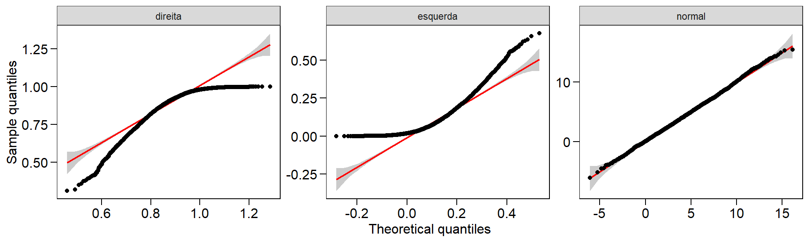
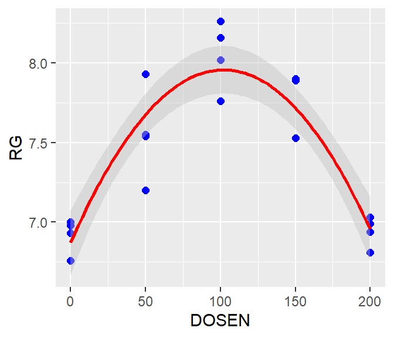
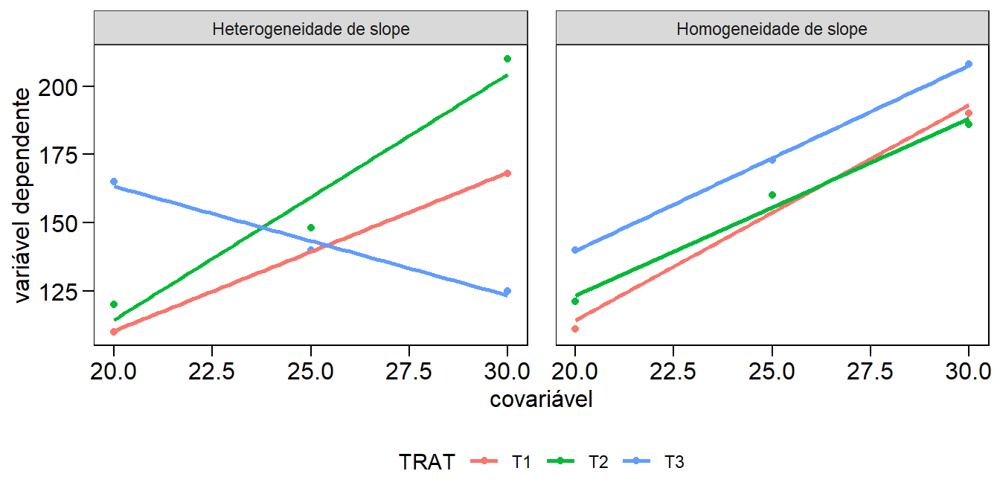

Capítulo 10 Análise de dados experimentais
“Muito melhor uma resposta aproximada à pergunta certa, que muitas vezes é vaga, do que uma resposta exata à pergunta errada, que sempre pode ser feita com precisão.” — John Tukey
Nesta seção será abordado aspectos relacionados a análise de experimentos agrícolas, com ênfase na utilização de testes paramétricos. Esta seção será dividida em três partes principais:
Parte 1: estatistica básica: Medidas de tendência central e de variabilidade. Intervalos de confiança para média. Testes de hipóteses para verificar a igualdade entre médias de uma ou duas amostras.
Parte 2: delineamentos básicos: delineamentos experimentais inteiramente casualisado (DIC) e blocos ao acaso (DBC). Pressupostos dos modelos estatisticos. Testes complementares (média e regressão).
Parte 3: análise de covariância: Análise de covariância como uma ferramenta estatística para redução do erro experimental.
Parte 4: modelos lineares generalizados: Modelos Lineares Generalizados aplicados a análise de dados não gaussianos.
Parte 5: experimentos fatoriais: experimentos fatorias e experimentos com parcelas subdivididas.
10.1 Estatistica básica
10.1.1 Medidas de tendência central
Nesta seção mostraremos como calular medidas de tendência central e medidas de variabilidade. As medidas de tendencia central são valores que representam um conjunto de dados. Entre as mais comuns podemos citar a média, mediana e moda.
set.seed(1)
Amostra1 = rnorm(100, 12, 3) # Gera uma amostra com distribuição normal
Amostra2 = rpois(100, 12) # Gera uma amostra com distribuição Poisson
mean(Amostra1) # média[1] 12.32666[1] 12.34173O R calcula a média e mediana através das funções mean() e median() , porém não calcula a moda. No blog Ridículas, mantido pelo LEG da UFPR, dois métodos são dicutidos. Incentivamos a leitura do material.
10.1.2 Medidas de variabilidade
As seguintes medidas de variabilidade podem ser computadas, com suas respectivas funções:
- Desvio padrão
sd() - Variância
var() - Amplitude total
range() - Amplitude interquartílica
IQR()
O desvio padrão e a variância podem ser obtidas com as funções sd() e var(), respectivamente.
[1] 2.694598[1] 7.260859[1] 5.35590 19.20485[1] 3.557364Não existe no R uma função para computar o coeficiente de variação, então vamos criá-la utilizando a abordagem function():
CV = function(dados){
if(!class(dados) == "numeric"){
stop("Os dados precisam ser numéricos")
} #Indica que os dados devem ser numéricos
media = mean(dados)
sd = sd(dados)
CV = (sd/media) * 100
return(CV) # Valor que será retornado pela função
}
CV(Amostra1)[1] 21.85992A distribuição dos dados pode ser determinada utilizando histograma de frequências, QQ-Plos e Box-Plot (conforme visto anteriormente). Estatísticas como a amplitude, erro padrão da média, intervalo de confiança, entre outros, podem ser obtidas com a função desc_stat() do pacote metan32. Esta função permite computar as estatisticas para uma ou mais variáveis de um data frame ou um vetor de dados numéricos, conforme mostrado abaixo.
Statistic CL CW EL EP NKR NR
AV.dev 1.97984 5.20535 0.99508 0.045944 2.7308 1.30020
CI.mean 0.36487 0.99004 0.19866 0.008912 0.5480 0.25906
CV 7.95223 25.22676 8.28389 10.496714 10.7445 10.15941
IQR 3.70050 9.18526 1.72500 0.081987 4.8500 2.40000
Kurt -0.79090 -0.70920 -0.09265 -0.428534 -0.1873 0.15369
max 34.66000 38.52228 17.94000 0.660500 42.0000 21.20000
mean 29.01091 24.81413 15.16303 0.536844 32.2500 16.12308
median 28.66900 24.50294 15.13000 0.544433 32.0000 16.00000
min 23.49200 11.05737 11.50000 0.385648 23.2000 12.40000
n 156.00000 156.00000 156.00000 156.000000 156.0000 156.00000
norm.pval 0.01821 0.18475 0.34062 0.186462 0.9177 0.01537
norm.stat 0.97913 0.98766 0.99004 0.987699 0.9955 0.97849
Q2.5 24.64675 12.81180 12.46750 0.420678 25.5750 13.55000
Q25 27.30750 20.14643 14.37500 0.497493 29.6000 14.80000
Q75 31.00800 29.33169 16.10000 0.579479 34.4500 17.20000
Q97.5 32.84800 36.03537 17.50000 0.631202 39.0750 20.00000
SD.amo 2.30701 6.25980 1.25609 0.056351 3.4651 1.63801
SD.pop 2.29961 6.23971 1.25206 0.056170 3.4540 1.63275
SE.mean 0.18471 0.50119 0.10057 0.004512 0.2774 0.13115
skew -0.02402 -0.06447 -0.25647 -0.272225 0.1205 0.41299
var.amo 5.32232 39.18513 1.57776 0.003175 12.0070 2.68308
var.pop 5.28820 38.93394 1.56764 0.003155 11.9301 2.66588Utilizando a função split_factors() é possível computar as estatísticas para cada nível de um fator. Neste exemplo, vamos calcular as estatísticas para cada um dos ambientes em que o experimento foi realizado, selecionando somente os valores da média, desvio padrão e coeficiente de variação. O argumento stats é utilizado para selecionar as estatísticas. Ele é um vetor de nomes separados por vírgula com" no início e no final do vetor apenas.
- Isso vai funcionar:
stats = c("mean, SE.mean, CV, max, min")stats = "mean"
- Isso não vai funcionar:
stats = c("mean, "SE.mean", "CV", "max", "min")stats = c("mean,SE.mean, CV, max,min")
data_ge2 %>%
split_factors(ENV) %>%
desc_stat(EP, EL, CL, CW, NR, NKR,
stats = c("mean, SD.amo, CV"))---------------------------------------------------------------------------
A1
---------------------------------------------------------------------------
Statistic CL CW EL EP NKR NR
CV 7.528 19.968 7.537 7.75122 8.631 11.657
mean 29.727 28.333 15.621 0.56672 33.867 16.892
SD.amo 2.238 5.657 1.177 0.04393 2.923 1.969
---------------------------------------------------------------------------
A2
---------------------------------------------------------------------------
Statistic CL CW EL EP NKR NR
CV 8.879 29.124 8.954 12.0518 10.108 9.129
mean 28.463 23.754 15.233 0.5269 32.282 15.795
SD.amo 2.527 6.918 1.364 0.0635 3.263 1.442
---------------------------------------------------------------------------
A3
---------------------------------------------------------------------------
Statistic CL CW EL EP NKR NR
CV 8.472 24.577 6.853 9.52860 10.292 9.725
mean 28.449 20.780 14.668 0.49579 30.400 15.785
SD.amo 2.410 5.107 1.005 0.04724 3.129 1.535
---------------------------------------------------------------------------
A4
---------------------------------------------------------------------------
Statistic CL CW EL EP NKR NR
CV 6.072 17.271 8.631 7.06269 11.430 8.339
mean 29.405 26.390 15.130 0.55797 32.451 16.021
SD.amo 1.785 4.558 1.306 0.03941 3.709 1.33610.1.3 Testes de aderência
Testes de aderência a distribuições teóricas também são de grande utilizada para as ciências agrárias. O teste de Shapiro-Wilk, realizado pela função shapiro.test() , é amplamente utilizada para realizar o teste de normalidade dos dados. Para testar a aderência a outras distribuições teóricas, o teste de Kolmolgorov-Smirnov (função ks.test()) é uma alternativa.
Shapiro-Wilk normality test
data: Amostra1
W = 0.9956, p-value = 0.9876
Shapiro-Wilk normality test
data: Amostra2
W = 0.95815, p-value = 0.002976# Kolmogorov–Smirnov
# Amostra1 e Amostra2 provém da mesma distribuição?
ks.test(Amostra1, Amostra2)
Two-sample Kolmogorov-Smirnov test
data: Amostra1 and Amostra2
D = 0.29, p-value = 0.0004453
alternative hypothesis: two-sided
One-sample Kolmogorov-Smirnov test
data: Amostra1
D = 0.094659, p-value = 0.3317
alternative hypothesis: two-sided10.1.4 Intervalos de confiança
A estimação por intervalo não fornece idéia da margem de erro cometida ao estimar um determinado parâmetro (Ferreira 2009). Por isso, para verificar se uma dada hipótese \(H_0\) (de igualdade) é ou não verdadeira, deve-se utilizar intervalos de confiança ou testes de hipóteses. A construção destes intervalos, e as particularidades dos testes de hipóteses, serão discutidos a seguir. Recomendamos como literatura o livro Estatística Básica33 escrito pelo Prof. Daniel Furtado Ferreira da UFV.
Para verificar a normalidade dos dados, as funções shapiro.test() e ks.test() e os gráficos QQ-Plot são de grande utilidade.
Será demostrado como testar hióteses para uma e duas médias pelo teste t de Student, o que exiege que os dados tenham distribuição normal univariada (já discutido anteriormente) ou bivariada (dados emparelhados). Para testar a normalidade bivariada, basta testar a normalidade da diferença entre as variáveis:
Shapiro-Wilk normality test
data: Amostra3
W = 0.97923, p-value = 0.1158A partir de um intervalo que tenha alta probabilidade de conter o valor paramétrico, é possível diferenciar duas estimativas (Ferreira 2009). O intervalo de confiança de uma média amostral de 95% é dado por:
\[ P\left[ {\bar X - {t_{\alpha /2}}\frac{S}{{\sqrt n }} \le \mu \le \bar X + {t_{\alpha /2}}\frac{S}{{\sqrt n }}} \right] = 1 - \alpha \]
Na expressão acima, \(\bar X\) é a média, \(S\) é o desvio padrão e \(-t_{\alpha /2}\) e \(+t_{\alpha /2}\) são os quantis inferior e superior, respectivamente, da distribuição t de Student. O intervalo acima indica que o valor do parâmetro (\(\mu\)) tem 95% de chance de estar contido no intervalo. Ressalta-se que a expressão acima está relacionada com a precisão e não com a acurácia da estimativa. Para calcular esse intervalo, podemos utilizar a função t.teste() .
[1] 11.79200 12.86133
attr(,"conf.level")
[1] 0.95mean of x
12.32666 O intervalo de confiança é, por default, de 95%. Poém, pode-se modificar através do argumento conf.level.
result = t.test(Amostra1, conf.level = 0.99)
result1 = t.test(Amostra1, conf.level = 0.90)
result$conf.int # Intervalo de confiança[1] 11.61895 13.03437
attr(,"conf.level")
[1] 0.99[1] 11.87925 12.77407
attr(,"conf.level")
[1] 0.9Para gerar os gráficos de intervalo de confiança será utilizada a função ggplot() do pacote ggplot2.
set.seed(100) #Ajusta a semente para reprodução dos números
Amostra1 = rnorm(100,10,10)
Amostra2 = rnorm(100,10,24)
Amostra3 = rnorm(100,25,15)
Amostra4 = rnorm(100,20,30)
dados_IC = tibble(
Factor = c("Amostra 1","Amostra 2", "Amostra 3", "Amostra 4"),
LL = c(t.test(Amostra1)$conf.int[1],
t.test(Amostra2)$conf.int[1],
t.test(Amostra3)$conf.int[1],
t.test(Amostra4)$conf.int[1]),
Mean = c(t.test(Amostra1)$estimate,
t.test(Amostra2)$estimate,
t.test(Amostra3)$estimate,
t.test(Amostra4)$estimate),
UL = c(t.test(Amostra1)$conf.int[2],
t.test(Amostra2)$conf.int[2],
t.test(Amostra3)$conf.int[2],
t.test(Amostra4)$conf.int[2]))
# Gráfico com barras de erros
cbPalette = c("red", "blue", "green", "pink") # armazenando as cores
err1 = ggplot(data = dados_IC, aes(y = Mean, x = Factor, colour = Factor)) +
geom_point(size = 2.5)+ # adiciona um ponto ao gráfico
geom_errorbar(aes(ymax = UL, ymin = LL), width = 0.1)+
scale_color_manual(values = cbPalette)+
coord_flip()+ # "inverte" o "x" e o "y"
expand_limits(y = c(0.4,0.6))+
theme(legend.position = "none")
# Gráfico de barras com barras de erros
err2 = ggplot(data = dados_IC, aes(y = Mean, x = Factor)) +
geom_bar(aes(fill = Factor), stat = "identity", position = "dodge")+
geom_errorbar(aes( ymax = UL, ymin = LL), width = 0.2)+
expand_limits(y = c(0,30)) +
scale_fill_manual(values = cbPalette)+
theme(legend.position = "none")
plot_grid(err1, err2)
Figure 10.1: Gráficos de intervalo de confiança (mais de uma variável)
10.1.5 Teste de hipóteses para amostras independentes
Os testes de hipóteses aqui demonstrados tem como objetivo (i) verificar se determianda amostra difrere ou não de zero (\({H_0}:\mu = 0\)) e (ii) se duas amostras são ou não iguais (\({H_0}:{\mu _1} = {\mu _2}\)). Para testar as hipóteses pode-se utilizar a função t.teste(). Utilizaremos como amostras os dados da variável MGRA do conjunto maize. A primeira amostra corresponde contém os valores de A1 e a segunda os valores de A2
Amostra1 = maize %>% filter(AMB == "A1") %>% select(MGRA) %>% pull()
Amostra2 = maize %>% filter(AMB == "A2") %>% select(MGRA) %>% pull()
t.test(Amostra1) # testa se a amostra difere de zero
One Sample t-test
data: Amostra1
t = 61.71, df = 194, p-value < 2.2e-16
alternative hypothesis: true mean is not equal to 0
95 percent confidence interval:
193.0630 205.8111
sample estimates:
mean of x
199.437
Welch Two Sample t-test
data: Amostra1 and Amostra2
t = 6.6279, df = 387.21, p-value = 1.144e-10
alternative hypothesis: true difference in means is not equal to 0
95 percent confidence interval:
21.80515 40.19763
sample estimates:
mean of x mean of y
199.4370 168.4356 Alternativamente, o pacote ggstatplot34 pode ser utilizado para confecionar gráficos que incluem teste de hipóteses.
O teste t pode ser utilizado para testar tanto hipóteses do tipo \({H_A}:\mu > 0\) ou \({H_A}:\mu < 0\). Porém, para isso, devemos utilizar o argumento alternative para indicar que o teste utilizado é unilateral.
One Sample t-test
data: Amostra1
t = 61.71, df = 194, p-value < 2.2e-16
alternative hypothesis: true mean is greater than 0
95 percent confidence interval:
194.0956 Inf
sample estimates:
mean of x
199.437
One Sample t-test
data: Amostra1
t = 61.71, df = 194, p-value = 1
alternative hypothesis: true mean is less than 0
95 percent confidence interval:
-Inf 204.7784
sample estimates:
mean of x
199.437 Outro pressuposto para realizar o teste t é a homogeneidade das variâncias. Quando as variâncias são heterogêneas, o grau de liberdade utilizado é calculado pela aproximação de Welch-Satterthwaite:
\[ \nu \cong \frac{{{{\left( {\frac{{S_1^2}}{{{n_1}}} + \frac{{S_2^2}}{{{n_2}}}} \right)}^2}}}{{\frac{{{{\left( {\frac{{S_1^2}}{{{n_1}}}} \right)}^2}}}{{{n_1} - 1}} + \frac{{{{\left( {\frac{{S_2^2}}{{{n_2}}}} \right)}^2}}}{{{n_2} - 1}}}} \]
F test to compare two variances
data: Amostra1 and Amostra2
F = 0.91355, num df = 194, denom df = 194, p-value = 0.5295
alternative hypothesis: true ratio of variances is not equal to 1
95 percent confidence interval:
0.688888 1.211488
sample estimates:
ratio of variances
0.9135534
Welch Two Sample t-test
data: Amostra1 and Amostra2
t = 6.6279, df = 387.21, p-value = 1.144e-10
alternative hypothesis: true difference in means is not equal to 0
95 percent confidence interval:
21.80515 40.19763
sample estimates:
mean of x mean of y
199.4370 168.4356
F test to compare two variances
data: Amostra3 and Amostra4
F = 0.65152, num df = 29, denom df = 29, p-value = 0.2545
alternative hypothesis: true ratio of variances is not equal to 1
95 percent confidence interval:
0.3101021 1.3688474
sample estimates:
ratio of variances
0.6515231
Two Sample t-test
data: Amostra1 and Amostra2
t = 6.6279, df = 388, p-value = 1.142e-10
alternative hypothesis: true difference in means is not equal to 0
95 percent confidence interval:
21.80520 40.19757
sample estimates:
mean of x mean of y
199.4370 168.4356 10.1.6 Teste de hipóteses para amostras dependentes
As formas de comparação discutidas acima consideram as amostras como sendo independentes entre si. Para dados emparelhados, deve-se utiliza o argumento paired = TRUE.
Amostra1 = rnorm(30,10,5)
Amostra2 = rnorm(30,15,5)
var.test(Amostra1, Amostra2) # Teste F para variâncias
F test to compare two variances
data: Amostra1 and Amostra2
F = 0.74981, num df = 29, denom df = 29, p-value = 0.4429
alternative hypothesis: true ratio of variances is not equal to 1
95 percent confidence interval:
0.3568811 1.5753388
sample estimates:
ratio of variances
0.7498058
Two Sample t-test
data: Amostra1 and Amostra2
t = -3.2434, df = 58, p-value = 0.001961
alternative hypothesis: true difference in means is not equal to 0
95 percent confidence interval:
-7.208743 -1.706572
sample estimates:
mean of x mean of y
9.873579 14.331237
Paired t-test
data: Amostra1 and Amostra2
t = -3.6981, df = 29, p-value = 0.000902
alternative hypothesis: true difference in means is not equal to 0
95 percent confidence interval:
-6.922951 -1.992364
sample estimates:
mean of the differences
-4.457658 Observa-se que existe uma diferença no valor da estatistica teste, nos graus de liberdade, no valor tabelado e, consequentemente, no p-valor. Para duas amostras independentes, o teste para a diferença é dado por
\[ {t_c} = \frac{{{{\bar X}_1} - {{\bar X}_2}}}{{S\sqrt {\frac{1}{{{n_1}}} + \frac{1}{{{n_2}}}} }} \sim {t_{\left( {\alpha ,\nu } \right)}} \]
Onde \(\alpha\) é a probabilidade de erro, \(\nu\) é o grau de liberdade (nº total de obervações-2), \(S\) é a média ponderada do desvio padrão, \({\bar X}_1\) e \({\bar X}_2\) são a média das amostras 1 e 2, respectivamente, e \(n_1\) e \(n_1\) e \(n_2\) são os tamanhos de amostra da amostra 1 e 2, respectivamente. No resultado acima, obervamos que \(\nu = 58\).
No caso de amostras pareadas (dependentes), a estatística teste é dada por
\[ {t_c} = \frac{{\bar d - {\mu _0}}}{{\frac{{{S_d}}}{{\sqrt n }}}} \sim {t_{\left( {\alpha ,\nu } \right)}} \]
Onde \(\alpha\) é a probabilidade de erro, \(\nu\) é o grau de liberdade (nº de diferenças-1), \(\bar d\) é a média das diferenças, \(S_d\) é o desvio padrão das diferenças e \(n\) é o número de diferenças. No resultado acima,obervamos que \(\nu = 29\).
10.2 Delineamentos básicos
As análises realizadas até agora tinham como objetivo verificar a existência de diferenças entre as médias de duas amostras. Porém, quando deseja-se estudar o efeito de “grupos de fatores” sobre determinado fenômeno, a análise da variância (ANOVA) é indicada. A ANOVA atribui a diversos fatores partes da variabilidade dos dados (Casella 2008).
Os delineamentos experimentais também são parte importante da ANOVA. Será dado mais destaque aos mais comuns: o delineamento inteiramente casualisado (DIC) e o blocos ao acaso (DBC) . O bloqueamento tem como objetivo remover parte da variabilidade. Como não se deseja encotrar diferença entre os blocos, análises complementares não são realizadas para este fator.
Nessa seção será demostrado como analisar dados experimentais utilizando estes dois delineamentos. Em um primeiro momento, serão demonstrados experimentos unifatorias e, posteriormente, experimentos bifatoriais com e sem parcelas subdivididas. Formas de como verificar se os pressupostos do modelo estatistico estão sendo cumpridos, e formas de contornar este problema caso estejam sendo violados, também serão demonstrados. Por fim, após a análise da variância, serão mostrados os testes complementares utilizados para tratamentos quali e quantitativos.
10.2.1 Princípios básicos
Os principios básicos da experimentação são a casualisação e a repetição. A repetição possibilita que o erro seja estimado, e a casualisação que eles sejam independentes.
10.2.2 Pressupostos
Independente do delineamento, os pressupostos do modelo estatístico são que os erros são independentes, homocedásticos e normais:
\[ {\boldsymbol{\varepsilon }} \sim {\rm N}\left( {0,{\boldsymbol{I}}{\sigma ^2}} \right) \]
As formas de realizar esse diagnóstico é através de testes estatísticos e gráficos de diagnósticos. Uma ferramente para contornar o problema de violação dos pressupostos é a transformação dos dados. Existem várias formas de transformar os dados (cada uma adequada a um caso específico), mas será dado enfase à transformação Box-Cox.
10.2.3 Estimação
A estimativa dos parâmetros é realizado pelo método dos minimos quadrados. Devido a matriz delineamento ser de posto incompleto (modelo superparametrizado), uma restrição deve ser imposta ao fator tratamentos para que a estimativa do efeito dos fatores seja única (\(\sum {{t_i}} = 0\)). Reparametrizações ou combinações lineares também podem ser utilizados para garantir a unicidade dos parâmetros (Rencher and Schaalje 2008).
10.2.4 Reparametrização, condições marginais ou combinações lineares?
As funções lm() e aov() são usualmente utilizadas para realizar a análise da variância. Ambas utilizam a reparametrização o modelo para estimar os parâmetros. Vamos ver isso no exemplo hipotético abaixo:
## Considerando os dados abaixo
dados = tibble(
"Tratamentos" = c(rep(1:4, each = 4)),
"Y" = qualitativo$RG[1:16]
)
dados# A tibble: 16 x 2
Tratamentos Y
<int> <dbl>
1 1 8.23
2 1 10.2
3 1 9.98
4 1 12.7
5 2 8.58
6 2 7.23
7 2 8.28
8 2 11.2
9 3 8.82
10 3 9.36
11 3 7.98
12 3 11.8
13 4 9.12
14 4 7.86
15 4 8.82
16 4 12.1 (Intercept) factor(Tratamentos)2 factor(Tratamentos)3
10.27750 -1.44550 -0.79750
factor(Tratamentos)4
-0.79675 (Intercept) factor(Tratamentos)2 factor(Tratamentos)3
10.27750 -1.44550 -0.79750
factor(Tratamentos)4
-0.79675 ## Abordagem matricial
y = as.matrix(dados$Y)
x = model.matrix(~factor(dados$Tratamentos))
beta = solve(t(x) %*% x) %*% t(x) %*% y
beta [,1]
(Intercept) 10.27750
factor(dados$Tratamentos)2 -1.44550
factor(dados$Tratamentos)3 -0.79750
factor(dados$Tratamentos)4 -0.79675Abaixo é apresentado o calculo da ANOVA de mod1 através de uma aboragem matricial. Portanto verifica-se que a reparametrização é o método utilizado pelas funções aov() e lm().
# Anova com uma abrodagem matricial
SQtrat = t(beta) %*% t(x) %*% y - ((sum(y))^2)/16
SQtotal = t(y) %*% y - ((sum(y))^2)/16
SQRes = SQtotal - SQtrat
Fc = (SQtrat/3)/(SQRes/12)
p_val = pf(Fc, 3, 12, lower.tail = FALSE)Demonstrar como o procedimento de estimação e cálculo da ANOVA serviu apenas para verificar de maneira didática como as funções no R contornam o problema da singularidade da matriz delineamento. Conforme já relatado acima, as funções aov() e lm() podem ser utilizadas para realizar a ANOVA. Porém, nesta seção será dado enfase as funções do pacote ExpDes, cujas funções possibilitam analisar dados uni e bifatoriais, e este último com e sem parcelas subdivididas. Esse pacote tem dentro dele as principais funções que são necessárias para realizar a ANOVA (entre elas a aov()), o que facilita a obtenção dos resultados.
10.2.5 Delineamento inteiramente casualizado (DIC)
O DIC é um delineamento adequado para áreas uniformes (parcelas são uniformes), onde não há necessidade de controle local (bloqueamento). Com esse delineamento, os tratamentos devem ser distribuidos aleatoriamente nas parcelas.
O modelo do DIC é dado por
\[ {Y_{ij}} = m + {t_i} + {\varepsilon _{ij}} \]
Onde \(m\) é a média geral do experimento, \(t_i\) é o efeito de tratamentos e \(\epsilon_{ij}\) é o erro experimental. Experimentos em DIC serão executados através da função crd() do pacote ExpDes. Os argumentos desta função são:
| Argumento | Descrição |
|---|---|
trat |
Objeto contendo os tratamentos |
resp |
Objeto contendo a variável resposta |
quali |
Se TRUE, o tratamento é qualitativo (default) |
mcomp |
Indicar o teste complementar (Tukey é default) |
nl |
Indica se uma regressão deve ser ajustada (FALSE é o default) |
hvar |
Teste de homogeneidade da variância (Bartlett é o default) |
sigT |
Significância da comparação múltipla |
sigF |
Significância do teste F |
Para maiores detalhes, ver o pdf do pacote35 ou ir em ajuda (digitar ?ExpDes no console).
10.2.5.1 DIC com fatores qualitativos
Os dados utilizados neste exemplo estão na planilha QUALI do conjunto de dados data/data_R.xlsx. Os próximos códigos carregam o conjunto de dados e criam um gráfico do tipo boxplot para explorar o padrão dos dados.
qualitativo = read_excel("data/data_R.xlsx", sheet = "QUALI")
p1 = ggplot(qualitativo, aes(HIBRIDO, RG))+
geom_hline(yintercept = mean(qualitativo$RG), linetype = "dashed")+
geom_boxplot()+
stat_summary(geom = "point", fun.y = mean, shape = 23)+
theme(axis.text.x = element_text(angle = 45, vjust = 1, hjust = 1))
p2 = ggplot(qualitativo, aes(factor(BLOCO), RG))+
geom_hline(yintercept = mean(qualitativo$RG), linetype = "dashed")+
geom_boxplot()+
stat_summary(geom = "point", fun.y = mean, shape = 23)
plot_grid(p1, p2)
Analizando o boxplot acima é razoável dizer que as médias dos tratamentos são diferentes, principalmente comparando o NUPEC_10 com NUPEC_1. Esta suspeita de diferença, no entanto, deve ser suportada com a realização da análise de variância. No pacote ExpDes, quando os fatores são qualitativos, a análise complementar aplicada é a comparção de médias. A função crd() do pacote retorna a tabela da ANOVA, a análise de pressupostos (normalidade e homogeneidade) e o teste de comparação de médias.
As funções do pacote ExpDes utilizam os dados “anexados” ao ambiente de trabalho, ou seja, um argumento data = . não existe para suas funções. Note que no exemplo abaixo foi utilizado a função with(qualitativo, crd(...)). Isto permite acessar variáveis presentes no data frame. Uma outra maneira de realizar esta mesma análise é utilizando a função attach(qualitativo), qual carregará o data frame no ambiente R, assim é possível utilizar a função crd(...). Após realizada a análise, é recomendado executar o comando detach(qualitativo) para “limpar” os dados do ambiente de trabalho.
------------------------------------------------------------------------
Analysis of Variance Table
------------------------------------------------------------------------
DF SS MS Fc Pr>Fc
Treatament 9 65.662 7.2958 2.0616 0.066545
Residuals 30 106.166 3.5389
Total 39 171.828
------------------------------------------------------------------------
CV = 23.02 %
------------------------------------------------------------------------
Shapiro-Wilk normality test
p-value: 3.544449e-05
WARNING: at 5% of significance, residuals can not be considered normal!
------------------------------------------------------------------------
------------------------------------------------------------------------
Homogeneity of variances test
p-value: 0.9990636
According to the test of bartlett at 5% of significance, residuals can be considered homocedastic.
------------------------------------------------------------------------
According to the F test, the means can not be considered distinct.
------------------------------------------------------------------------
Levels Means
1 NUPEC_1 10.27750
2 NUPEC_10 6.28300
3 NUPEC_2 8.83200
4 NUPEC_3 9.48000
5 NUPEC_4 9.48075
6 NUPEC_5 8.75075
7 NUPEC_6 7.33625
8 NUPEC_7 7.04500
9 NUPEC_8 7.24500
10 NUPEC_9 6.99225
------------------------------------------------------------------------A interpretação da significância, ou seja, se as médias de produtividade dos híbridos foram significativamente diferentes a uma determinada probabilidade de erro é feita verificando-se o valor de “Pr>fc” na ANOVA. A figura abaixo mostra a distribuição F considerando os graus de liberdade de tratamento e erro \(F_{9, 30}\) e nos ajuda a compreender um pouco melhor isto. O valor de F calculado em nosso exemplo foi de 2.0616, o que resulta em uma probabilidade de erro acumulada de 0.066545 (6,654%). Na figura abaixo, esta probabilidade de erro acumulada está representada pela cor vermelha. Para que uma diferença significativa a 5% de probabilidade de erro tivesse sido observada, o valor de F calculado deveria ter sido 2.2107 [qf(0.05, 9, 30, lower.tail = FALSE)], representado neste caso pela cor verde no gráfico.
Em sequência a ANOVA, a função retorna o resultado da análise complementar solicitada. Neste exemplo, o teste de Tukey (5% de erro) é utilizado. Este teste realiza todas as combinações possíveis entre as médias (por isso o nome comparação múltipla de medias), comparando se a diferença entre duas médias é maior ou menor que uma diferença mínima significativa (DMS). Esta DMS é calculada pela seguinte fórmula \(DMS = q \times \sqrt{QME/r}\), onde q é um valor tabelado, considerando o número de tratamentos e o GL do erro; QME é o quadrado médio do erro; e r é o número de repetições (ou blocos). O valor de q pode ser encontrado no apêndice 1. Para este caso, considerando 10 e 30 como o número de tratamentos e o GL do erro, respectivamente, o valor de q é 5,76, que aplicado na fórmula resulta em \(DMS = 5,76 \times \sqrt{3.5389/4}=5.417\). Logo, a diferença mínima entre duas médias para que estas sejam significativamente diferentes (5% de erro), deve ser de 5,417 toneladas. Como a diferença entre a maior média (NUPEC_01) e a menor média (NUPEC_10), foi de 3,994 toneladas, a média de todos os tratamentos foram consideradas iguais.
Considerando nosso exemplo, parece razoável dizer que 10,27 t é uma produção maior que 6,28 t. Então, é justo perguntar: O que pode ter acontecido para que as médias não tenham sido consideradas diferentes considerando a probabilidade de erro, mesmo tendo fortes indícios de que elas seriam? A primeira opção que nos vem a mente –e que na maioria das vezes é encontrada em artigos científicos– é que as alterações no rendimento de grão observadas fora resultado do acaso; ou seja, neste caso, há a probabilidade de 6,65% de que uma diferença pelo menos tão grande quanto a observada no estudo possa ser gerada a partir de amostras aleatórias se os tratamentos não aferatem a variável resposta. Logo, a recomendação estatística neste caso, seria por optar por qualquer um dos tratamentos. Do ponto de vista prático, sabemos que esta recomendação está totalmente equivocada. Neste ponto surge uma importante (e polêmica) questão: a interpretação do p-valor. Um p-valor de 0,05 não significa que haja uma chance de 95% de que determinada hipótese esteja correta. Em vez disso, significa que se a hipótese nula for verdadeira e todas as outras suposições feitas forem válidas, haverá 5% de chance que valores ao menos tão grandes quanto as médias dos tratamentos podem ser obtidos de amostras aleatórias. É preciso ter em mente que o p-valor relatado pelos testes é um significado probabilístico, não biológico. Assim, em experimentos biológicos a interpretação desta estatística deve ser cautelosa, pois um p-valor não pode indicar a importância de uma descoberta. Por exemplo, um medicamento pode ter um efeito estatisticamente significativo nos níveis de glicose no sangue dos pacientes sem ter um efeito terapêutico. Sugerimos a leitura de cinco interessantes artigos relacionados a este assunto (Altman and Krzywinski 2017; Baker 2016; Chawla 2017; Krzywinski and Altman 2013; Nuzzo 2014).
A fórmula da DMS descrita acima é utilizada apenas se (e somente se) o número de repetições de todos os tratamentos é igual. Caso algum tratamento apresente um número inferir de repetições, fato comumente observado em experimentos de campo devido a presença de parcelas perdidas, a DMS deste par de médias em específico deve ser corrigida. Geralmente, as análises complementares são realizadas quando a ANOVA indica significância para um determinado fator de variação, no entanto, o teste Tukey pode revelar diferença entre as médias, mesmo quando o teste F não indicar essa diferença. Isto pode ser observado, principalmente quando a probabilidade de erro for muito próxima de 5%, por exemplo, Pr>Fc = 0.0502. A recíproca também é verdadeira. O teste Tukey pode indicar que as médias não diferem, se Pr>Fc = 0.0492, por exemplo.
Em adição à justificativa anterior (as alterações no rendimento de grão observadas fora resultado do acaso), existem pelo menos mais três razões potenciais para a não regeição da hipótese \(H_0\) em nosso exemplo: (i) um experimento mal projetado com poder insuficiente para detectar uma diferença (à 5% de erro) entre as médias; (ii) os tratamentos foram mal escolhidos e não refletiram adequadamente a hipótese inicial do estudo; ou (iii) o experimento foi indevidamente instalado e conduzido sem supervisão adequada, com baixo controle de qualidade sobre os protocolos de tratamento, coleta e análise de dados. Esta última opção parece ser a mais razoável aqui. É possivel observar no boxplot para o fator bloco que o bloco 4 parece ter uma média superior aos outros blocos. Sabe-ser que no DIC, toda diferença entre as repetições de um mesmo tratamento comporão o erro experimental. Logo, neste exemplo, a área experimental não era homogênea como se pressupunha na instalação do experimento. Isto ficará claro, posteriormente, ao analisarmos o mesmo conjunto de dados, no entanto considerando um .
É possível extrair os erros através de mod3$residuos. Também é possível fazer diagnóstico dos pressupostos do modelo estatístico através de gráficos utilizando a função plotres():
Figure 10.2: Gráfico de resíduos gerado pela função plotres()
O p-valor do teste de Shapiro-Wilk indicou que os resíduos não seguem uma seguem uma distribuição normal, o que pode ser confirmado pelo QQ-Plot. O argumento hvar = "levene" na função é utilizado para testar a homogeneidade dos resíduos. De acordo com o resultado do teste, os resíduos podem ser considerados homogêneos.
Exercício 7
- Utilize os pacotes dplyr e ggplot2 para confeccionar um gráfico de barras onde o eixo y é representado pelos híbridos e o eixo x pelo rendimento de grãos.
- Adicione uma linha vertical tracejada mostrando a média global do experimento.
- Adicione a letra “a” em todas as barras para identificar a não diferença entre as médias.
10.2.5.2 DIC com fatores quantitativos
Vimos anteriormente que os fatores qualitativos são comparados através de comparações de médias. No caso de fatores quantitativos, o comum é utilizar regressões como análise complementar. Neste tipo de análise a \(SQ_{Trat}\) é decomposta, e cada polinômio explicará parte desta soma de quadrados. O maior grau significativo do polinômio determinará qual a regressão escolhida. Para implementar essa análise, utilizando a função crd(), basta indicar como FALSE no argumentos quali. O arquivo de dados “QUALITATIVO.xlsx” contém três exemplos, com comportamento linear, quadrático e cúbico. Utilizando o que aprendemos no ggplot2 até agora, vamos criar um gráfico para visualisar estes dados.
quantitativo_todos = read_excel("data/data_R.xlsx", sheet = "QUANTI")
ggplot(quantitativo_todos, aes(DOSEN, RG, col = TIPO)) +
geom_point() +
geom_smooth()
Figure 10.3: Exemplo de regressão com comportamento linear, quadrático e cúbico
Como exemplo didático, vamos analisar os dados que parecem ter comportamento quadrático para ver se, estatisticamente, isto é confirmado. Para isto, utilizamos a função subset() para criar um novo conjunto de dados que contenha somente o nível “QUADRÁTICA” dos nosso dados originais. Para evitar uma longa saída, os resultados desta seção em específico não foram mostrados.
quantitativo = filter(quantitativo_todos, TIPO == "QUADRÁTICA")
crd_Reg = with(quantitativo, crd(DOSEN, RG, quali = FALSE, hvar = "levene"))Abaixo vamos reproduzir o exemplo para os usuários das funções aov() ou lm().
Reg = quantitativo
Total = aov(RG ~ 1, data = Reg)
Saturado = aov(RG ~ factor(DOSEN), data = Reg)
Linear = lm(RG ~ DOSEN, data = Reg)
Quadratica = lm(RG ~ poly(DOSEN, 2, raw = TRUE), data = Reg)
Cubica = lm(RG ~ poly(DOSEN, 3, raw = TRUE), data = Reg)
anova(Total, Linear, Quadratica, Cubica, Saturado) Analysis of Variance Table
Model 1: RG ~ 1
Model 2: RG ~ DOSEN
Model 3: RG ~ poly(DOSEN, 2, raw = TRUE)
Model 4: RG ~ poly(DOSEN, 3, raw = TRUE)
Model 5: RG ~ factor(DOSEN)
Res.Df RSS Df Sum of Sq F Pr(>F)
1 19 4.5308
2 18 4.5135 1 0.0172 0.4273 0.5232
3 17 0.7071 1 3.8064 94.4317 7.275e-08 ***
4 16 0.6735 1 0.0336 0.8346 0.3754
5 15 0.6046 1 0.0688 1.7075 0.2110
---
Signif. codes: 0 '***' 0.001 '**' 0.01 '*' 0.05 '.' 0.1 ' ' 1O polinômio de segundo grau deve ser o escolhido, pois ele foi o maior grau significativo (p-valor menor que 0,05). Os desvios da regressão nada mais são do que a FALTA DE AJUSTE dos modelos. Porém, como é comum em ciências agrárias, ajusta-se apenas polinômios até a terceira ordem, devido a dificuldade de interpretção de polinômios com ordens superiores. É importante ressaltar que aqui estamos falando de regressões polinomiais. Como será visto posteriormente, a falta de ajuste é inaceitável para modelos de regressão múltipla. O valor de \(R^2\) é dado pela razão entre a \(SQ_{Regressão}\) e a \(SQ_{Tratamento}\). No exemplo acima, o \(R^2\) da regressão quadrática (selecionada) é:
\[ {R^2} = \frac{{S{Q_{{\rm{Regressão}}}}}}{{S{Q_{{\rm{Tratamento}}}}}} = \frac{{2,4900 + 1,5465}}{{4,0505}} = 0.9965 \]
Percebe-se claramente pelos resultados acima que a significância do grau do polinômio está diretamente relacionado com quanto ele “contribui” para explicar a \(SQ_{Trat}\).
A forma mais prática de analisar uma regressão é através de gráficos. A função crd() fornece essa alternativa, através da função graphics(). Nesta função existe dois argumentos obrigatórios: a, onde indicamos o objeto que contém a saída da análise do experimento e grau, onde indicamos o grau do polinômio.
Gráfico de resultados: uma proposta
ggplot(quantitativo, aes(x = DOSEN, y = RG))+ # Indicar dados e variáveis
geom_point(color = "blue", size = 2) + # Adiociona e edita os pontos
geom_smooth(method = "lm",
formula = y ~ poly(x, 2, raw = TRUE),
color = "red",
fill = "grey")Figure 10.4: Gráfico de linhas gerado pela função ggplot()
Este é um exemplo simples de uso da função ggplot(). Porém, como visto até aqui, esta função (mesmo em aplicações simples) tem suas complexidades. Pensando nisso, o pacote metan36 foi desenvolvido e contém funções úteis que facilitam a confeção de gráficos. A partir dos experimentos fatoriais, apenas as funções deste pacote serão utilizados para a confecção dos gráficos.
Exercício 8
- Utilize a função
plot_lines()do pacote metan para confeccionar um gráfico semelhante ao anterior. Para maiores detalhes veja?metan::plot_lines.
10.2.6 Delineamento blocos ao acaso (DBC)
No delineamento de blocos ao acaso uma restrição na casualisação é imposta visando agrupar unidades experimentais uniformes dentro de um bloco, de maneira que a heterogeneidade da área experimental fique entre os blocos. O bloquemento tem como objetivo reduzir o erro experimental, “transferindo” parte do erro experimental para efeito de bloco. O modelo do DBC é dado por
\[ {Y_{ij}} = m + {b_j} + {t_i} + {\varepsilon _{ij}} \]
Onde \(m\) é a média geral do experimento, \(b_j\) é o efeito de bloco, \(t_i\) é o efeito de tratamentos e \(\epsilon_{ij}\) é o erro experimental. No pacote ExpDes, este delineamento é executado pela função rbd(). Os argumentos desta função são:
| Argumento | Descrição |
|---|---|
trat |
Objeto contendo os tratamentos |
bloco |
Objeto contendo os blocos |
resp |
Objeto contendo a variável resposta |
quali |
Se TRUE, o tratamento é qualitativo (default) |
mcomp |
Indicar o teste complementar (Tukey é default) |
nl |
Indica se uma regressão deve ser ajustada (FALSE é o default) |
hvar |
Teste de homogeneidade da variância (ONeill e Mathews é o default) |
sigT |
Significância da comparação múltipla |
sigF |
Significância do teste F |
Percebe-se que apenas um argumento foi adicionado a função: bloco.
10.2.6.1 DBC com fatores qualitativos
Neste exemplo, vamos realizar a ANOVA com os mesmos dados do exemplo , agrupando as médias pelo teste Scott-Knott utilizando o argumento mcomp = "sk":
------------------------------------------------------------------------
Analysis of Variance Table
------------------------------------------------------------------------
DF SS MS Fc Pr>Fc
Treatament 9 65.662 7.296 18.716 2.0298e-09
Block 3 95.642 31.881 81.785 1.1000e-13
Residuals 27 10.525 0.390
Total 39 171.828
------------------------------------------------------------------------
CV = 7.64 %
------------------------------------------------------------------------
Shapiro-Wilk normality test
p-value: 0.6834664
According to Shapiro-Wilk normality test at 5% of significance, residuals can be considered normal.
------------------------------------------------------------------------
------------------------------------------------------------------------
Homogeneity of variances test
p-value: 0.2599294
According to the test of oneillmathews at 5% of significance, the variances can be considered homocedastic.
------------------------------------------------------------------------
Scott-Knott test
------------------------------------------------------------------------
Groups Treatments Means
1 a NUPEC_1 10.27750
2 a NUPEC_4 9.48075
3 a NUPEC_3 9.48000
4 b NUPEC_2 8.83200
5 b NUPEC_5 8.75075
6 c NUPEC_6 7.33625
7 c NUPEC_8 7.24500
8 c NUPEC_7 7.04500
9 c NUPEC_9 6.99225
10 c NUPEC_10 6.28300
------------------------------------------------------------------------Considerando o bloco como um fator de variação no experimento, pode-se afirmar que a média de produtividade difere entre os híbridos testados. Como o efeito de bloco foi significativo Pr>Fc < 0.05, conclui-se que a escolha pelo delineamento em blocos casualizados foi correta, e, principalmente, que a disposição dos blocos na área experimental possibilitou lograr a heterogeneidade entre os blocos, deixando a homogeneidade dentro de cada bloco. O Fc para o fator de tratamento “HÍBRIDOS” foi de 18.716, qual acumula uma probabilidade de erro de somente 0.0000002029.
Incluindo o bloco como fonte de variação nota-se que 3 graus de liberdade (GL) que antes compunham o erro “saíram” e passaram a compor o GL do bloco. Assim, neste exemplo, o GL do erro foi de 27. No entanto, uma grande parte da soma de quadrados do erro (aproximadamente 90%) observada no delineamento DIC era oriunda do efeito de bloco. Com isto, a soma de quadrado do erro considerando o delineamento DBC foi de apenas 10.525 e, mesmo com a “perda” de 3 GL para compor o bloco, o quadrado médio do erro foi de somente 0.390 (89% menor quando comparado com o delineamento DIC). Consequentemente o valor do F calculado para o fator HÍBRIDO foi significativo. Cabe ressaltar que a soma de quadrados para o fator de variação HÍBRIDO não muda se o delineamento for DIC ou DBC.
10.2.6.2 DBC com fatores quantitativos
Para realizar a análise de regressão considerando um delineamento DBC basta utilizar a função rbd() incluindo o seguinte argumento quali = FALSE.
Exercício 9
Rode a programação para os dados quantitativos considerando o delineamento DBC e compare os resultados com aquela obtida pela função
crd()para os mesmos dados.As estimativas dos parâmetros da regressão são as mesmas?
- O p-valor para o testes de hipótese para efeito de tratamento é o mesmo?
10.3 Transformação de dados
Em todos os exemplos apresentados até aqui, os resíduos devem cumprir os seguintes pressupsotos: normalidade, homocedasticidade e independência:
\[ {\boldsymbol{\varepsilon }} \sim {\rm N}\left( {0,{\boldsymbol{I}}{\sigma ^2}} \right) \]
Esses pressupostos são necessários para que o teste F seja utilizado na análise de variância. Sob normalidade dos resíduos e hipótese nula \(H_0\), a razão entre as somas de quadrado de tratamento e resíduo tem distribuição F (Rencher and Schaalje 2008). Já em condições de não normalidade dos resíduos, o poder do teste (probabilidade de rejeitar \(H_0\)) é reduzido. Apesar disso, não há grandes mudanças no erro tipo I quando a pressuposição de normalidade é violada (Senoglu and Tiku 2001), e por isso ele é considerado robusto.
Apesar do teste F de ser robusto a desvios da normalidade, é comum que ela seja cumprida para que o teste seja aplicado. Quando as pressuposições não são cumpridas, um dos procedimentos mais comum é transformar os dados. A transformação Box-Cox (Box and Cox 1964) é uma das mais comuns. Ela consiste em transformar os valores de \(Y_i\) por \(Y_i(\lambda)\), sendo o valor de \(\lambda\) estimado por máxima verossimilhança. Após a transformação de \(Y_i\) por \(Y_i(\lambda)\) os dados seguem distribuição normal com variância constante.
A função boxcox() , do pacote MASS, pode ser utilizada para estimar o valor de \(\lambda\). Uma sequência de valores de \(\lambda\) são estimados, e o escolhido é aquele que maximiza a função de log-verossimilhança. No modelo considerando o delineamento inteiramente casualizado (qualitativo), o pressuposto de normalidade foi violado. O próximo passo é encontrar o valor de \(\lambda\) para transformar a variáveis, utilizando para isso a função boxcox().
MASS::boxcox(RG ~ HIBRIDO, data = qualitativo,
lambda = seq(-2, 2, length = 20)) # Indica os valores de lambda 
Figure 10.5: Gráfico gerado pela função boxcox() para identificar o valor de lambda
Percebe-se que o intervalo de \(\lambda\) cruza pelo valor zero, indicando que a transformação log é a mais adequada. Uma forma mais prática de encontrar o valor de \(\lambda\) que maximiza a função de log-verossimilhança é utilizar a função locator() . Após executar a função abaixo, basta clicar com o cursor sobre o ponto que maximiza a função para que as coordenadas sejam mostradas no console.
Utilizando a transformação log(), os resíduos ainda continuaram sendo não normais, apesar de se aproximaram mais da distribuição normal neste caso. Quando a transformação não for eficiente, recomenda-se a utilização de testes não paramétricos, por exemplo, no caso de um delineamento inteiramente casualizado, o teste de Kruskal-Wallis ou de um delineamento de blocos completos casualisados, o teste de Friedman.
10.4 Análise de covariância (ANCOVA)
10.4.1 Introdução
Neta seção, veremos alguns conceitos estatísticos e uma aplicação numérica de uma técnica interessante que pode ser útil, se corretamente utilizada, para reduzir o erro experimental em experimentos agronômicos: a análise de covariância (ANCOVA). A ANCOVA é um modelo linear geral que combina princípios de ANOVA e regressão para avaliar se as médias de uma variável dependente são iguais entre níveis de uma variável independente categórica (tratamento), controlando estatisticamente os efeitos de outras variáveis contínuas que não são de interesse primário. Tais variáveis contínuas são medidas em cada unidade experimental e são chamadas covariáveis. Idealmente, estas variáveis devem ser determinadas antes que os tratamentos tenham sido atribuídos às unidades experimentais ou, no mínimo, que os valores das covariáveis não sejam afetados pelos tratamentos aplicados (Snedecor and Cochran 1967). A ANCOVA tem várias aplicações. No contexto da experimentação agronômica, ela é frequentemente utilizada reduzir a variabilidade no experimento pela contabilização da variabilidade nas unidades experimentais que não puderam ser controladas pelo design experimental.
Considere um experimento conduzido em uma área em que as unidades experimentais exibem considerável variabilidade que não pode ser controlada utilizando estratégias de bloqueio. O pesquisador acredita, digamos, baseado em experiências passadas, que uma ou mais características das unidades experimentais podem ajudar a descrever parte da variabilidade entre as unidades experimentais. Nesta condição, o pesquisador pode utilizar resultados de experimentos passados observados nas mesmas unidades experimentais –excluido o efeito de tratamento– como uma covariável. Outra estratégia –embora um pouco distante em tempos de recursos financeiros limitados– poderia ser a realização de uma análise de solo em cada unidade experimental e utilizar os resultados obtidos como covariáveis. Neste sentido, ao utilizar informações relacionadas as características fisico-químicas do solo como uma covariável, o pesquisador tenta explicar a variabilidade nas unidades experimentais que não podem ser convenientemente controladas por outra técnica experimental.
10.4.2 Modelo estatístico
Em uma estrura de tratamentos fixos, unifatorial, conduzidos em delineamento inteiramente casualizado, o modelo da ANOVA tradicional visto anteriormente pode ser escrito da seguinte forma quando uma covariável numérica (\(X\)) também foi mensurada em cada unidade experimental.
\[ Y_{ij} = \mu + \tau_i + \beta(X_{ij} - \bar X_{..}) + \varepsilon_{ij} \]
onde \(Y_{ij}\) é a o valor observado do i-ésimo tratamento na j-ésima repetição; \(\mu\) é a média geral; \(\tau_i\) é o efeito do i-ésimo tratamento; \(\beta\) é o coeficiente de regressão de Y em X e \(\varepsilon_{ij}\) é o erro aleatório.
As pressuposições do modelo da ANCOVA são as mesmas que a ANOVA, ou seja, aditividade dos efeitos de bloco e tratamento (em DBC), normalidade, homogeneidade e independêcia dos resíduos, em adição à duas importantes considerações adicionais: (i) independência entre a covariável e o efeito do tratamento; e (ii) homogeneidade dos coeficientes angulares da regressão, que serão tratados à partir daqui como slopes. Considerando que os pressupostos da ANOVA já são conhecidos, veremos com mais detalhes estes dois últimos à seguir.
10.4.3 Independência entre a covariável e os efeitos de tratamento
Vimos anteriormente que covariável deve ser independente do efeito do tratamento. A figura 6 mostra três diferentes cenários. No primeiro (a) a represetação esquemática de um delineamento unifatorial conduzido em DIC é mostrada. Neste exemplo, a variância da variável resposta (RG) pode ser dividida em duas partes. Uma correspondente aos efeitos dos tratamentos e a outra devido ao erro experimental, ou variância não explicada pelos tratamentos. Aqui, vimos novamente que toda variância não explicada pelos termos do modelo irá compor o erro experimental. No segundo exemplo (b) um cenário ideal para ANCOVA é representado. Nesta condição, a covariável compartilha sua variância apenas com o pouco da variância do RG que é atualmente inexplicado pelos efeitos dos tratamentos . Em outras palavras, é completamente independente dos tratamentos. Este cenário é o único em que a ANCOVA tradicional é apropriada.

Regra para análise de covariância
O terceiro exemplo, (c) representa uma situação em que as pessoas costumam usar a ANCOVA quando não deveriam. Nesta situação, o efeito da covariável se sobrepõe ao efeito do tratamento. Em outras palavras, o efeito do tratamento é confundido com o efeito da covariável. Em situções como esta, a covariável reduzirá (estatisticamente falando) o efeito do tratamento, pois explica uma parte da variação que seria atribuída ao efeito de tratamento. Assim, efeitos espúrios de tratamento podem surgir, comprometendo a interpretação da ANCOVA (Stevens 2009).
A ANCOVA nem sempre é uma solução magica. O problema do compartilhamento da variância da covariável com a variância de tratamento é comum e muitas vezes é ignorado ou incompreendido pelos pesquisadores (Miller and Chapman 2001). Em uma ampla revisão, Miller e Chapman citam muitas situações em que as pessoas aplicam a ANCOVA de maneira incorreta. Recomendamos a leitura deste artigo. Felizmente, modelos generalizados de ANCOVA que permitem tratar esta interação tratamento-covariável têm sido desenvolvidos (Mayer et al. 2014), mas isto está além do objetivo deste material.
10.4.4 Homogeneidade dos slopes da regressão
Baseado no modelo estatístico apresentado, percebe-se que quando uma ANCOVA é realizada, buscamos uma relação geral entre a variável dependente e a covariável; ou seja, uma regressão global é ajustada aos dados, ignorando à que nível do tratamento uma determinada obsevação pertence. Ao ajustar esse modelo geral, supomos, portanto, que essa relação geral seja verdadeira para todos os níveis do fator tratamento. Por exemplo, se houver uma relação positiva (slope positivo) entre a covariável e a variável dependente no primeiro nível (\(T_1\)), presumimos que há uma relação positiva (slope positivo) em todos os outros níveis também. Vamos tentar tornar esse conceito um pouco mais concreto. A figura 7 mostra um gráfico de dispersão que exibe uma relação hipotética entre a covariável e a variável dependente em duas condições: heterogeneidade de slope (esquerda) e homogeneidade de slope (direita). Na primeira condição, a relação entre a variável dependente e covariável é positiva para os tratamentos \(T_1\) e \(T_2\), mas para o \(T_3\), esta relação parece ser negativa. Esta é uma condição em que a utilização da ANCOVA não é indicada. Na segunda condição, a relação entre a variável dependente e a covariável é muito semelhante entre os tratamentos.

Figure 10.6: Gráfico de dispersão e linhas de regressão entre a variável dependente e a covariável. As diferentes cores represetam três tratamentos hipotéticos.
10.4.5 Um exemplo numérico
Até aqui, passamos por uma breve introdução abordando o modelo mais simples de ANCOVA. Esta técnica, no entanto, pode ser utilizada em qualquer delineamento experimental. Para maiores informações, recomendamos a leitura de três bons materiais: Rutherford (2001), um livro específico para ANCOVA; Field, Miles, and Field (2012), pp. 462, com aplicação em R; e Scheiner and Gurevitch (2001), pp. 77, com aplicação em SAS.
Vamos agora, utilizando um exemplo numérico, demonstrar como esta análise pode ser realizada no software R e identificar como ela pode ser útil na análise de experimentos agronônicos. Os dados são apresentados em Snedecor and Cochran (1967), pp. 428 e são resultantes de um experimento com 6 tratamentos (cultivares), conduzido em DBC com 4 blocos. A variável resposta mensurada em cada unidade experimental foi gramas de espigas (GE) em adição a uma covariável, número de plantas por unidade experimental (NPLA). Para realizar uma ANCOVA, recomendamos que as seguintes etapas sejam seguidas:
Assumindo que o R será utilizado, insira os dados e instale os pacotes necessários.
Explore os seus dados: Faça uso de gráficos para explorar o padrão encontrado nos dados. A sugestão aqui é utilizar gráficos do tipo boxplot, visto a riqueza de informações proporcionada por este tipo de gráficos.
Verifique se a covariável e os tratamentos são independentes: Execute uma ANOVA com a covariável como o variável dependente para verificar se a covariável não difere significativamente entre os níveis da variável independente (tratamento). Se um resultado significativo for observado, interrompa a análise aqui.
A ANCOVA: assumindo que tudo estava bem nas etapas 2 e 3, execute a análise principal de covariância.
Verifique a homogeneidade dos slopes da regressão: execute novamente a ANCOVA, incluindo, agora, a interação entre a variável independente e a covariável. Se esta interação é significativa, então você não pode assumir a homogeneidade dos slopes da regressão.
- Compute as análises complementares: encontrada diferença significativa para tratamento na etapa 4 e assumindo que a etapa 5 indicou homogeneidade dos slopes da regressão, as análises complementares –como comparações múltiplas de médias– podem então ser realizadas.
Vamos agora ver cada uma destas etapas detalhadamente.
1. Download dos dados e pacotes necessários
O seguinte código é utilizado para instalar/carregar os pacotes necessários bem como para fazer o upload dos dados e armazenar no dataframe covar
# dados
covar = read_excel("data/data_R.xlsx", sheet = "COVAR")
# duas primeiras colunas como fator
covar = covar %>% mutate_at(c(1:2), as.factor)
covar_ggplot = covar %>% gather(key = "variable", value = "val", NPUE, GE)
# Estrutura dos dados
str(covar)Classes 'tbl_df', 'tbl' and 'data.frame': 24 obs. of 4 variables:
$ TRAT : Factor w/ 6 levels "T1","T2","T3",..: 1 1 1 1 2 2 2 2 3 3 ...
$ BLOCO: Factor w/ 4 levels "1","2","3","4": 1 2 3 4 1 2 3 4 1 2 ...
$ NPUE : num 28 22 27 19 23 26 28 24 27 24 ...
$ GE : num 202 165 191 134 145 201 203 180 188 185 ...2. Explorando os dados
A construção de gráficos do tipo boxplot para a variável resposta e a covariável são importantes, pois permitem identificar a presença de possíveis outliers nos dados além de facilitar a visualização de padrões de associação entre as variáveis.
mean_var = covar_ggplot %>%
group_by(variable) %>%
summarise(mean = mean(val))
ggplot(covar_ggplot, aes(x = TRAT, y = val)) +
geom_boxplot(fill = "gray75", width = 0.6) +
facet_wrap(~ variable, scales = "free_y") +
geom_hline(data = mean_var, aes(yintercept = mean), linetype = "dashed") +
stat_summary(fun.y = mean,
geom = "point",
shape = 23,
fill = "red")+
labs(x = "Tratamentos", y = "valores observados")
Figure 10.7: Gráfico boxplot da variável independente (GE) e da covariável (NPUE) em cada nível do tratamento (T).
A linha tracejada horizontal representa a média geral de cada variável. Seis estatísticas são mostradas neste boxplot. A mediana (linha horizontal); a média (losango vermelho); as caixas inferior e superior correspondem ao primeiro e terceiro quartis (percentis 25 e 75, respectivamente); as linha vertical superior se estende da caixa até o maior valor, não maior que \(1,5 \times {IQR}\) (onde IQR é a amplitude interquartílica). A linha vertical inferior se estende da caixa até o menor valor, de no máximo, \(1,5 \times {IQR}\). Dados além destas linhas podem ser considerados outliers.
3. Identificando a independência entre a covariável e os tratamentos
A independência entre a covariavel e os efeitos de tratamento, demostrada graficamente na figura 6 é um importante pressuposto da ANCOVA. Esta independência é checada realizando uma ANOVA considerando a covariável como variável dependente. A função aov() é utilizada para o ajuste do modelo. O primeiro argumento, NPUE, é a variável resposta (neste caso a covariável) que queremos analisar. O operador ~ informa que os seguintes argumentos irão ser considerados como as fontes de variação no modelo. Neste caso, TRAT e BLOCO são incluídos.
# modelo ANOVA convencional para a covariável
convencional = aov(NPUE ~ TRAT + BLOCO, data = covar)
# Análise de variância
anova(convencional) Analysis of Variance Table
Response: NPUE
Df Sum Sq Mean Sq F value Pr(>F)
TRAT 5 45.833 9.1667 1.2079 0.3524
BLOCO 3 21.667 7.2222 0.9517 0.4407
Residuals 15 113.833 7.5889 O resultado da ANOVA acima indica que a covariável é independente dos efeitos de tratamento. Neste caso, prosseguimos para o próximo passo. Se um resultado significativo for encontrado nesta etapa, a realização da ANCOVA não é recomendada.
4. O modelo da ANCOVA
Para realizar a ANCOVA, utilizaremos a mesma função aov(). Agora, no entanto, a variável dependente (do lado esquerdo do operador ~) será a GE e a covariável NPUE será incluída no modelo. Aqui, a função anova() é substituída pela função Anova() do pacote car para que a soma de quadrado tipo III (em linguagem SAS) seja computada. Este tipo de soma de quadrados é utilizada, pois cada efeito é ajustado para todos os outros termos do modelo, diferentemente do tipo I (padrão na função anova()), onde a adição de cada efeito é feita sequencialmente e depende de como os termos do modelo são ordenados (Langsrud 2003).
# modelo ANOVA convencional
ancova = aov(GE ~ TRAT + NPUE + BLOCO, data = covar)
# Análise de variância
Anova(ancova, type = 3)Anova Table (Type III tests)
Response: GE
Sum Sq Df F value Pr(>F)
(Intercept) 169.9 1 1.7476 0.207376
TRAT 3227.3 5 6.6381 0.002296 **
NPUE 7391.0 1 76.0124 4.963e-07 ***
BLOCO 1502.4 3 5.1504 0.013158 *
Residuals 1361.3 14
---
Signif. codes: 0 '***' 0.001 '**' 0.01 '*' 0.05 '.' 0.1 ' ' 1Analisando primeiro os valores de significância, fica claro que a covariável prediz significativamente a variável dependente (p-valor < 0,01). Portanto, a variável gramas de espiga por parcela é influenciada pelo número de plantas por parcela. Da mesma forma, o efeito de tratamento também foi significativo.
Shapiro-Wilk normality test
data: residuals
W = 0.97894, p-value = 0.8755Levene's Test for Homogeneity of Variance (center = median)
Df F value Pr(>F)
group 5 1.1686 0.3624
18
Tukey's one df test for additivity
F = 1.0000419 Denom df = 14 p-value = 0.3342722# interpretação gráfica
autoplot(ancova) +
geom_point(col = "black") +
theme(text = element_text(size = 8),
axis.title = element_text(size = 8),
axis.text = element_text(size = 8),
aspect.ratio = 1)
Figure 10.8: Gráfico residual do modelo ANCOVA obtido pela função autoplot().
A Figura abaixo obtida com a função autoplot(), mostra 4 gráficos. Os dois primeiros são os mais importantes para nós aqui. O primeiro (Residual vs fitted) pode ser utilizado para identificar a homogeneidade das variâncias. Uma distribuição aleatória dos pontos no gráfico deve ser observada. Quando um padrão de distibuição é observado –como, por exemplo, a distribuição dos pontos em forma de funil– uma investigação deve ser realizada, pois este padrão indica a possiblidade de heterogeneidade das variâncias. O segundo gráfico (Normal Q-Q) nos informa quanto a normalidade dos resíduos, ou seja, é desejado que os pontos sejam distribuídos ao redor da linha diagonal. Em nosso caso, os pontos foram uniformemente distribuídos, o que confirma o resultado do teste estatístico observado anteriormente.
A utilização de gráficos residuais para identificar os pressupostos de modelos ainda não é muito difundida. No entanto, estes gráficos apresentam muitas vantagens em relação aos métodos estatísticos, principalmente quando os testes são aplicados em conjuntos de dados com um alto tamanho de amostra. Uma ampla discussão comparando métodos estatísticos e gráficos na verificação de pressupostos dos modelos é apresentada por Kozak and Piepho (2017).
5. Homogeneidade dos slopes da regressão
Vimos anteriormente que homogeneidade dos slopes é um pressuposto importante na ANCOVA. Para identificarmos isto em nosso exemplo, vamos criar um gráfico semelhate ao apresentado na figura 7.
ggplot(covar, aes(NPUE, GE, col = TRAT)) +
geom_point(aes(col = TRAT)) +
geom_smooth(aes(col = TRAT), method = "lm", se = F) +
geom_smooth(col = "black", linetype = "dashed", method = "lm", se = F)+
theme(legend.position = "bottom",
aspect.ratio = 1)+
guides(col = guide_legend(nrow = 1, byrow = TRUE))+
labs(x ="Número de plantas por parcela",
y = "Gramas de espigas por parcela")Figure 10.9: Regressões ajustadas para cada tratamento entre a variável dependente e a covariável. A linha preta tracejada representa a regressão geral. O slope desta regressão é utilizado para a obtenção das médias ajustadas.
O gráfico acima mostra uma regressão linear ajustada para cada tratamento (linhas coloridas) e uma regerssão linear geral (linha pontilhada) entre a covariável e a variável resposta. Observando cada reta ajustada, é razoável dizer que os slopes podem ser considerados homogêneos, ou seja, todos eles apresentam valor positivo. Um teste de hipótese pode ser utilizado para testarmos se os slopes podem ou não ser considerados homogêneos. Para isto, basta incluirmos o termo de interação entre a covariável e o tratamento no modelo ancova ajustado anterioremente. A função update() pode ser utilizada para este fim, como segue:
# Incluindo o termo de interação
ancova_int = update(ancova, .~. + NPUE:TRAT)
# Análise de variância
Anova(ancova_int, type = 3) Anova Table (Type III tests)
Response: GE
Sum Sq Df F value Pr(>F)
(Intercept) 300.0 1 2.8462 0.1258641
TRAT 597.9 5 1.1344 0.4084810
NPUE 3906.0 1 37.0530 0.0001821 ***
BLOCO 1311.4 3 4.1467 0.0421214 *
TRAT:NPUE 412.5 5 0.7827 0.5867580
Residuals 948.7 9
---
Signif. codes: 0 '***' 0.001 '**' 0.01 '*' 0.05 '.' 0.1 ' ' 1Como já suspeitávamos, a interação covariável \(\times\) tratamento não foi significativa, indicando homogeneidade dos slopes.
Na função update() acima, o operador .~. significa “manter a mesma variável resposta e preditores do objeto ancova” e + NPUE:TRAT significa “adicionar o termo de interação ao modelo ancova”.
6. Análises complementares
Nos últimos cinco tópicos, vimos em detalhe os principais passos para o cálculo da ANCOVA. Conseguimos identificar que a covariável influencia a variável resposta, que ela é idependente dos nossos tratamentos e os slopes das regressões de cada tratamento são homogêneos. Duas etapas restam para nós agora: (i) identificar o quanto ganhamos –em termos de sucesso preditivo– considerando a inclusão da covariável do modelo; e (ii) quais são as médias ajustadas apra cada tratamento. Uma maneira simples de identificar se a inclusão da covariável melhorou a predição do modelo, é por meio da criação de um gráfico de dispersão com uma linha de referência 1:1 (valores preditos vs observados). Testes estatísticos de seleção de modelos –como, por exemplo, o AIC– também podem serem utilizados. Nesta etapa, vamos criar um novo dataframe chamado covar_pred, qual conterá, além dos dados originais, os valores preditos pela ANOVA e ANCOVA.
anovaa = aov(GE ~ TRAT + BLOCO, data = covar)
ancova_pred = covar %>% mutate(pred = predict(ancova), metodo = "ANCOVA")
anova_pred = covar %>% mutate(pred = predict(anovaa), metodo = "ANOVA")
preditos = rbind(ancova_pred, anova_pred)
AIC(anovaa, ancova) df AIC
anovaa 10 229.6856
ancova 11 187.0242# gráfico 1:1
ggplot(preditos, aes(x = pred, y = GE))+
geom_point(aes(col = TRAT)) +
geom_abline(intercept = 0, slope = 1, linetype = "dashed") +
xlim(130, 270) +
ylim(130, 270) +
theme(aspect.ratio = 1,
panel.spacing = unit(0,"cm")) +
guides(col = guide_legend(nrow = 1, byrow = TRUE))+
theme(legend.position = "bottom", legend.title = element_blank())+
facet_wrap(~metodo)+
labs(x = "Gramas de espigas estimado",
y = "Gramas de espiga observada ")
Neste gráfico, a linha pontilhada representa a linha de referência 1:1. Fica evidente ao observar o gráfico acima que a utilização da covariável melhorou a capacidade preditiva do modelo, pois os valores preditos estavam mais próximos da linha de referência. Os valores de AIC também indicaram que o modelo ANCOVA foi mais preciso.
Gráficos do tipo 1:1 são úteis para identificar a capacidade preditiva de modelos. Dois cuidados, no entanto, precisam ser tomados. Primeiro, por ser um gráfico gráfico de dispersão com uma linha de referência 1:1, os eixos x e y devem estar na mesma escala. Segundo, é assumido que a linha diagonal tem intercepto igual a zero e slope igual a um. Assim, um teste de hipotese para estes parâmetros pode ser útil.
O próximo passo é obtermos as médias de GE para cada tratamento ajustadas para um mesmo valor de NPUE. Considerando estas variáveis como Y e X, respectivamente, este valor é dado pela expressão:
\[ \hat m_i = \bar{Y}_{i.}- \hat \beta(\bar{X}_{i.}- \bar X_{..}) \]
Onde \(\bar{Y}_{i.}\) é a média ajustada de Y do i-ésimo tratamento; \(\hat \beta\) é o slope da regressão linear estimada entre a variável dependente e a covariável; \(\bar{X}_{i.}\) é a média da covariável para o i-ésimo tratamento; e \(\bar{X}_{..}\) é a média geral da covariável. No software R, as médias ajustadas bem como os testes post hocs podem ser obtidos pelos seguintes códigos.
med_anova = emmeans(anovaa, ~ TRAT) # Média não ajustada
med_ancoova = emmeans(ancova, ~ TRAT) # Média ajustada para NPUE
xlab = "Gramas de espiga por parcela"
ylab = "Tratamento"
scale_x = scale_x_continuous(limits = c(140, 260))
p1 = plot(med_anova, comparisons = T, xlab = xlab, ylab = ylab) + scale_x
p2 = plot(med_ancoova, comparisons = T, xlab = xlab, ylab = ylab) + scale_x
plot_grid(p1, p2, labels = c("ANOVA", "ANCOVA"),
hjust = -1.5, vjust = 2.5, label_size = 8)
A figura acima mostra as médias ajustadas para os dois métodos. As barras azuis representam o intervalo de confiança 95% da média predita enquanto que as setas vermelhas indicam comparação das médias pelo teste de Tukey. Cultivares com setas que não se sobrepõe apresentam médias significativamente diferentes. Note que a amplitude do intervalo de confiança é menor para o modelo da ANCOVA. Assim, vimos como este método pode ser útil na redução do erro em análise de dados experimentais. Seguindo este exemplo, a ANCOVA pode ser aplicada em experimentos onde uma potencial covariável está disponível, como por exemplo, a severidade de ferrugem na folha observada em cada unidade experimental antes da aplicação de fungicida.
10.5 Análise de dados não gaussianos
Dados com distribuições não normal são mais comuns do que podemos imaginar. Na área agrícola, exemplos incluem a percentagem de sementes que germinam (Binomial), a contagem de ervas daninhas por parcela (Poisson), a proporção de área foliar necrosada por uma determinada doença (Beta), a escala de sintomas de uma determinada doença (Multinominal). Para todas as distribuições, exceto a normal, a variância é dependente da média. Logo, assumindo efeito significativo dos tratamentos, o pressuposto da homogeneidade das variâncias será violado quando dados não normais são analizados (Stroup 2015). Neste momento, a questão que surge é: como estes dados deveriam ser analizados? Antes de responder esta questão, vamos passar por uma breve história.
10.5.1 Da análise de variação aos modelos lineares mistos generalizados
Fisher and Mackenzie (1923), estudando a variação de diferentes cultivares de batata, publicaram o primeiro trabalho demonstrando o uso da ANOVA para a avaliação de experimentos agrícolas. O método da ANOVA se tornaria popular e amplamente utilizado após Fisher estabelecer as bases teóricas e os pressupostos desta técnica (Fisher 1925, 1935). As ideias de Fisher foram extendidas para experimentos mais complexos, mais tarde, por Yates (1940). Até então, a questão da ANOVA de dados não gaussianos parecia estar resolvida. O teorema central do limite dava suporte a tal análise. Mais tarde, Bartlett (1947) demonstrou como as transformações de dados não normais poderiam ser úteis para realização da ANOVA. Esta técnica permanece sendo utilizada até hoje.
Nesta mesma época, a terminologia “Modelos Mistos” foi introduzida por Eisenhart (1947). Mais tarde, Henderson (1949); Henderson (1950) propos as equações do modelo misto, das quais os BLUPs são as soluções. Em 1953, este mesmo autor demonstrou os diferentes tipos de somas de quadrados (vistos na seção da análise de covariância) e descreveu alguns métodos para estimação dos componentes de variância em dados não ortogonais (Henderson 1953). Mais tarde (1971), a estimação da Máxima Verossimilhança Restrita (REML) como um método para estimativa dos componentes de variância em um modelo com dados desbalanceados foi apresentada por Patterson and Thompson (1971).
Um resumo até aqui
- O uso da ANOVA para análise de experimentos já estava consolidada;
- A utilização de transformação de variáveis era uma técnica aceita para realização da ANOVA com dados não normais;
- A teoria por tráz dos modelos mistos já era compreendida, no entanto seu uso não era disseminado devido, principalmente, devido a necessidade de operações matriciais complexas.
Nelder and Wedderburn (1972) extenderam a base do modelo linear da ANOVA e regressão para acomodar suposições de probabilidade mais plausíveis aos dados observados, resultando nos conhecidos modelos lineares generalizados (GLM, generalized linear models). A essência dessa generalização proporciona duas importantes mudanças nos pressupostos dos modelos: A primeira é que os dados não necessariamente precisam ser normalmente distribuídos mas podem assumir qualquer distribuição da família exponencial de distribuições a qual inclui, entre outras, a distribuição Normal, Poisson e Binomial (Koopman 1936). A segunda é que a média não é necessariamente tomada como uma combinação linear de parâmetros, mas que alguma função da média é. Esta função é conhecida como função de ligação e nos GLMs relaciona a média da variável resposta à combinação linear das variáveis explicativas (Nelder and Wedderburn 1972). Semelhante a evolução dos LMs para GLMs, os LMMs foram extendidos para modelos lineares mistos generalizados (GLMM, generalized linear mixed-effect model) por Wolfinger and O’connell (1993) e Breslow and Clayton (1993).
10.5.2 Estratégias para análise de dados não gaussianos
Quando confrontados com dados não normais, a maioria dos pesquisadores opta por uma das três opções a seguir: (i) confiar na robustez da ANOVA clássica à pequenos desvios de normalidade em ensaios balanceados (Blanca et al. 2017) e realizá-la sem nenhum peso na consciência; (ii) realizar alguma transformação na variável e realizar a ANOVA com dados transformados; (iii) utilizar algum teste não paramétrico. A segunda opção parece ser a mais utilizada. Variáveis são transformadas para que os pressupostos de normalidade e homogeneidade das variâncias seja cuprido –ou ao menos aproximado– (Bartlett 1947).
O uso de testes não paramétricos também pode ser uma alternativa para a análise de dados não normais. Os testes de Friedman (Friedman 1937) e de Kruskal & Wallis (Kruskal and Wallis 1952) são as alternativas não paramétricas para a análise de variância nos delineamentos DBC e DIC (unifatoriais), respectivamente. A aplicação destes testes não será o foco aqui, principalmente devido a limitação com relação a complexidade do design experimental suportada por estes testes. Uma excelente aplicação prática, no entanto, pode ser vista em Field, Miles, and Field (2012), pp. 653.
Vale ressaltar que a escolha por estes “atalhos”, no entanto, nem sempre é a solução definitiva. Dados de contagem com muitos valores zero não podem ser normalizados por transformação. Os testes não paramétricos, ao contrário de como muitos pensam, requerem, sim, alguns pressupostos. Por exemplo, o teste de Freedman é flexivel quando a não normalidade mas só é valido se a distribuição da variável resposta entre os grupos for a mesma em todos os outros aspectos (variância, assimetria, curtose). Quando estes pressupostos não são cumpridos, o poder do teste é reduzido (Laurent and Turk 2013). Assim, ao vez de encaixar os dados em estatísticas clássicas, os pesquisadores devem utilizar abordagens estatísticas que correspondam aos seus dados (Mora et al. 2008). Em casos de variáveis não normais, as mais indicadas são os GLMs (Nelder and Wedderburn 1972) ou GLMMs (Wolfinger and O’connell 1993).
Hábitos de aprendizado de que a ANOVA pode ser aplicada diretamente a dados transformados não ajudam –e muitas vezes impedem– a rápida expansão do uso de modelos mais sofisticados como os GLM(M)s. O uso de GLM(M)s, no entanto, requer um aprendizado considerável. Dependendo da aplicação, a subida pode ser íngreme. Apresentar uma introdução ao uso dos GLM(M)s em R para análise de dados não gaussianos e compará-los com os procedimentos tradicionais é nosso principal objetivo aqui.
10.5.3 Introdução aos modelos lineares generalizados
Vamos considerar um simples experimento que comparou a eficiência de um herbicida pré-emergente no controle de uma determinada erva daninha em comparação com um tratamento controle. O ensaio foi realizado em um delineamento DIC com oito repetições, sendo cada repetição caracterizada por um vaso. Logo, o ensaio foi composto por 16 vasos. Em cada vaso foram semeadas 50 sementes da determinada erva daninha e após um período previamente especificado, o número de sementes germinadas foi observado. Assumindo que a germinação de cada semente é um processo independente, a variável resposta em cada unidade experimental (\(Y_{ij}\)) tem uma distribuição binomial com N = 50 e probabilidade de germinação de \(\pi_{ij}\) para o i-ésimo tratamento na j-ésima repetição.
Intuitivamente, a primeira opção de muitos pesquisadores para analisar estes dados seria iniciar com uma aproximação normal. Com N = 50 –e considerando p = 0,5– mesmo dados binomiais apresentam boa aproximação normal. O modelo com aproximação normal seria:
Variavel resposta: \(p_{ij} = y_{ij}/50\), onde \(y_{ij}\) é o número de sementes germinadas do i-ésimo tratamento na j-ésima repetição
O modelo tradicional é então \(p_{ij} = \mu + \tau_i + \varepsilon_{ij}\) onde \(\mu\) é a média geral; \(\tau_i\) é o efeito do i-ésimo tratamento e \(\varepsilon_{ij}\) é o erro aleatório assumido \(i.i.d \sim N(0, \sigma^2 )\).
Diferentemente do modelo da ANOVA tradicional apresentado acima onde uma única equação é considerada, os GLMs são montados basicamente em três etapas (Stroup 2013):
A distribuição das observações: Em nosso exemplo, assumimos que \(y_{ij} \sim B(50, \pi_i)\);
O preditor linear: Em nosso exemplo \(\eta_{ij} = \eta + \tau_{i}\). Aqui, \(\eta\) é a média geral e \(\tau_{i}\) é o efeito do tratamento. Uma sutil mas importante diferença é que aqui o residual (\(\varepsilon_{ij}\)) não é considerado.
A função de ligação: Foi mensionado anteriormente que nos GLMs a média não é necessariamente tomada como uma combinação linear de parâmetros, mas que alguma função da média é. Dados de distribuição binomial são geralmente melhor ajustados utilizando o parâmetro canônico \(log[\pi/(1-\pi)]\) (função da média) do que a média em si. Esta função é a função de ligação que relaciona a distribuição das observações com o preditor linear. em nosso caso, \(\eta_{ij} = log[\pi_{i}/(1-\pi_{i})]\). Assim, quando os parâmetros do modelo são ajustados não é a média que é estimada, mas a função de ligação. Neste caso, estamos interessados em estimar a probabilidade de sucesso (germinação) para cada tratamento, então \(\hat \pi_{i} = 1/(1 + e ^ {-\hat \eta_{i}})\).
Dois exemplos numéricos serão implementados. O primeiro, considera a análise de dados de proporção discreta. O segundo é voltado para a análise de dados de contagem. Os dados utilizados são oriundos de um ensaio com nove cultivares de soja conduzidas em um delineamento DBC com quatro blocos. Em cada bloco, diversas variáveis foram mensuradas em 10 plantas aleatoriamente selecionadas. Para fins didáticos, somente as variáveis de interesse serão utilizadas aqui. (i) proporção de legumes viáveis, obtido pela razão entre o número de legumes viáveis (com ao menos um grão) e o número de legumes total das 10 plantas. (ii) o número total de legumes das 10 plantas que continha quatro grãos. Para cada exemplo, a análise será realizada considerando uma ANOVA normal, utilizando uma transformação indicada e utilizando um modelo misto generalizado.
10.5.4 Dados de proporção
Por definição, a proporção de legumes viáveis observado na j-ésima repetição do i-ésimo tratamento (\(p_{ij}\)) tem uma distribuição binomial onde \(p_{ij} \sim B(N, \pi_{ij})\), onde \(\pi_{ij}\) denota a probabilidade de uma observação aleatória do tratamento i no bloco j apresentar a característica de interesse – neste caso do legume ser viável. Neste caso, o objetivo é estimar a probabilidade de cada tratamento e utilizando testes de hipóteses compará-las. O valor esperado para o tratamento i é dado então por \(N\pi_i\) com variância \(N\pi_i(1-\pi_i)\).
Mesmo em experimentos com tamanho de amostra grande, diferenças significativas no \(\pi_i\) resultarão em variãncias heterogêneas, violando o pressuposto da ANOVA. Dados oriundo de proporções (\(p_{ij}\)) são frequentemente transformados para a escala \(P^*_{ij} = sen^{-1} \sqrt{P_{ij}}\) (Rodrigues-Soares et al. 2018).
- Exemplo numérico
Para o exemplo, os dados de proporção de legumes viáveis descrito anteriormente serão utilizados. A figura 25 mostra a proporção de legumes viáveis para cada tratamento bem como a distribuição dos pontos em torno de uma linha de probabilidade normal esperada.
SOJA = read_excel("data/data_R.xlsx", sheet = "SOJA")
medlvia = mean(SOJA$NLV / SOJA$NLT) # Média de legumes viáveis
# Explorando os dados
p1 = ggplot(SOJA, aes(x = CULTIVAR, y = NLV/NLT)) +
geom_boxplot(fill = "gray") +
geom_hline(yintercept = medlvia, linetype = "dashed")+
stat_summary(fun.y = mean, geom = "point", shape = 23, fill = "red") +
labs(x = "Cultivares", y = "Taxa de legumes viáveis")
p2 = ggplot(SOJA, aes(sample = NLV/NLT))+
qqplotr::stat_qq_line(col = "red")+
qqplotr::stat_qq_point()+
qqplotr::stat_qq_band(alpha = 0.2)+
labs(x = "Theoretical quantiles", y = "Sample quantiles")
plot_grid(p1, p2, labels = c("(a)", "(b)"),
label_size = 10, vjust = 3, hjust = -5)Figure 10.10: Proporção de legumes viáveis em nove cultivares de soja (a) e gráfico Q-Q plot (b).
A média do número de legumes viáveis observado foi de 0.89 (89%). A cultivar C1 apresenta um valor ligeiramente menor que as outras cultivares. Em adição, a distribuição desta variável parece seguir uma distribuição normal; no entanto, este gráfico só deve ser utilizado para fins de exploração dos dados. A inferência quanto a normalidade deve ser realizada nos resíduos.
Os códigos seguintes são utilizados para realizar a análise considerando os três métodos. O primeiro modelo armazenado no objeto convencional é ajustado sem nenhuma transformação, onde a variável respota (NLV/NLT) é dada em função ~ do fator tratamento (CULTIVAR) + bloco (REP). O segundo modelo armazenado no objeto transform é ajustado com a variável resposta transformada para o arcoseno da raiz quadrada da proporção (asin(sqrt(NLV/NLT))). O terceiro modelo armazenado no objeto general é ajustado considerando um modelo linear misto generalizado considerando o fator bloco aleatório. Para a implementação deste modelo considerou-se o seguinte:
A distribuição das observações: \(y_{ij}|\beta_j \sim B(N, \pi_{ij})\), onde N é o número de legumes total em cada bloco, e \(\pi_{ij}\) é a probabilidade da ocorrência de legumes viáveis para o i-ésimo tratamento no j-ésimo bloco.
O preditor linear: \(\eta_{ij} = \eta + \tau_{i} + \beta_j\), onde \(\beta_j \sim N(0, \sigma^2_b)\). Note que a adição do efeito de bloco como aleatório torna nosso modelo um modelo linear misto generalizado. Este efeito foi considerado aleatório, principalmente pela ocorrência de diferentes números de legumes observado em cada bloco. Stroup (2015) sugere fortemente considerar o efeito de bloco aleatório nestas condições.
A função de ligação: \(\eta_{ij}\) = Logit(\(\pi_{ij}\)) = \(log[\pi_{ij}/(1-\pi_{ij})]\)
convencional = lm(NLV/NLT ~ CULTIVAR + REP, data = SOJA)
transform = lm(asin(sqrt(NLV/NLT)) ~ CULTIVAR + REP, data = SOJA)
general = glmer(cbind(NLV, NLT-NLV) ~ CULTIVAR + (1|REP),
family = binomial,
data = SOJA)Os modelos ajustados foram salvos em seus respectivos objetos. Neste momento, uma investigação quanto aos pressuposstos destes modelos é necessária. As funções shapiro.test() e leveneTest() são utilizadas para a análise de normalidade e homogeneidade dos resíduos, respectivamente.
Shapiro-Wilk normality test
data: residuals(convencional)
W = 0.93971, p-value = 0.1198
Shapiro-Wilk normality test
data: residuals(transform)
W = 0.95492, p-value = 0.2814
Shapiro-Wilk normality test
data: residuals(general, type = "deviance")
W = 0.95317, p-value = 0.2557Levene's Test for Homogeneity of Variance (center = median)
Df F value Pr(>F)
group 8 0.0925 0.9991
18 Levene's Test for Homogeneity of Variance (center = median)
Df F value Pr(>F)
group 8 0.1512 0.9948
18 Nada parece haver de errado com nossos modelos até aqui. De fato, à 5% de erro, tanto os resíduais do modelo convencional quanto transform são considerados homocedásticos e normalmente distribuídos. Vamos, agora, a uma abordagem gráfica.
Testes de hipótese -incluíndo os testes de normalidade e homogeneidade- são sensíveis ao tamanho da amostra. Assim, quanto menor o tamanho da amostra (em nosso caso 27), menor é a probabilidae de rejeição da hipótese \(h_o\) (resíduos normais). Por outro lado, em tamanhos de amostra grande, a probabilidade de rejeição da hipótese \(h_o\) é maior. Este assunto é bem discutido por Kozak and Piepho (2017), quais demonstraram que gráficos residuais são melhores do que os testes estatísticos para verificar as pressuposições da ANOVA.
res = tibble(Convencional = residuals(convencional),
Transformado = residuals(transform),
Generalizado = residuals(general, type = "deviance")) %>%
gather()
ggplot(res, aes(sample = value)) +
qqplotr::stat_qq_line(col = "red")+
qqplotr::stat_qq_point()+
qqplotr::stat_qq_band(alpha = 0.2)+
facet_wrap(~key, scales = "free")+
labs(x = "Quantis teóricos", y = "Quantis observados")
Figure 10.11: Gráficos Q-Q plot dos resíduos obtidos na análise da proporção de legumes viáveis.
Conclusão até aqui: baseado em testes de aderência à normalidade e na interpretação gráfica, os pressupostos do modelo da ANOVA convencional foram cumpridos. Então, é justo perguntar: Por que utilizar um modelo mais “complicado” se há evidências de que a ANOVA nos dados transformados (ou mesmo nos dados originais) não trará maiores problemas? Antes de qualquer conclusão vamos observar os resultados dos três modelos.
O código abaixo é utilizado para obter as médias marginais dos modelos ajustados. Na ANOVA com os dados transformados e no modelo generalizado, todas as inferências são realizadas na escala transfromada mas as médias são apresentadas na escala original.
med_conv = emmeans(convencional, ~ CULTIVAR, type = "response")
med_trans = emmeans(transform, ~ CULTIVAR, type = "response")
med_gene = emmeans(general, ~ CULTIVAR, type = "response")
# gráficos para as médias
scale_x = scale_x_continuous(limits = c(0.75, 1))
xlab = "Proporção de legumes viáveis"
p3 = plot(med_conv, comparisons = T, xlab = xlab) + scale_x
p4 = plot(med_trans, comparisons = T, xlab = xlab) + scale_x
p5 = plot(med_gene, comparisons = T, xlab = xlab) + scale_x
plot_grid(p3, p4, p5, ncol = 3,
labels = c("(a)", "(b)", "(c)"), hjust = -2.5)
Figure 10.12: Médias estimadas, intervalos de confiança e comparação de médias para os modelos da ANOVA tradicional (a), com dados transformados (b) e generalizado (c) para a proporção de legumes viáveis.
Comparando os resultados dos três modelos na mesma escala, fica fácil observar que o modelo generalizado apresentou um intervalo de confiança das médias (barra azul) menor quando comparado com os procedimentos tradicionais. A seta vermelha representa a comparação das médias pelo teste de Tukey a 5% de erro. Tratamentos com setas que não se sobrepõe diferem estatisticamente considerando a probabilidade de erro.
Neste ponto identificamos as limitações do modelo convencional da ANOVA. A transformação indicada não ajudou muito. Todos os indícios levavam a acreditar que não teríamos maiores problemas realizando a ANOVA com os dados transformados –ou mesmo originais– devido a boa aproximação normal dos erros. Estes modelos, no entanto, indicaram que as diferenças observadas entre as médias fora resultado do acaso, o que parece não fazer muito sentido quando observamos a figura 30. Neste caso, o pesquisador reportaria estes resultados em seu artigo/relatório e apresentaria alguma justificativa para este “fracasso”. O que precisamos compreender, no entanto, é que mesmo com uma boa aproximação normal dos erros, os dados ainda continuam sendo dados binomias! Se observarmos no conjunto de dados veremos que cada bloco possui um número diferente de legumes totais. Ao considerar a proporção de legumes viáveis e análisar essa variável, ignoramos completamente o N em nossa amostra. Poucos se dão conta, mas a proporção de 0.5 de legumes viáveis é a mesma considerando 5 legumes viáveis de um total de 10 legumes e 500 legumes viáveis de um total de 1000 legumes. A precisão, no entanto é diferente. O modelo generalizado aplicado neste exemplo considera esta diferença.
10.5.5 Dados de contagem
Dados de contagem são muito comuns em experimentos agronômicos, tendo a propriedade de serem não negativos e inteiros. Em probabilidade, estes tipos de dados seguem uma distribuição Poisson (Cochran 1940). A exemplo de Zoz et al. (2018), dados discretos (\(D_{ij}\)) são frequentemente transformados para a escala \(D^*_{ij} = \sqrt{D_{ij}}\) ou para \(D^*_{ij} = \sqrt{D_{ij}+0,5}\) quando há um elevado número de zeros presente.
- Exemplo numérico
Para este exemplo, utilizaremos a variável número de legumes com quatro grãos (NL4G) do conjunto de dados SOJA. Os códigos abaixo são utilizado para a exploração dos dados.
mednl4g = mean(SOJA$NL4G)
# Explorando os dados
p1 = ggplot(SOJA, aes(x = CULTIVAR, y = NL4G)) +
geom_boxplot(fill = "gray") +
geom_hline(yintercept = mednl4g, linetype = "dashed") +
stat_summary(fun.y = mean, geom = "point",
shape = 23, fill = "red") +
labs(x = "Cultivares", y = "Número de legumes com quatro grãos")
p2 = ggplot(SOJA, aes(sample = NL4G)) +
qqplotr::stat_qq_line(col = "red") +
qqplotr::stat_qq_point() +
qqplotr::stat_qq_band(alpha = 0.2)+
labs(x = "Quantis teóricos", y = "Quantis observados")
plot_grid(p1, p2, labels = c("(a)", "(b)"),
label_size = 10, vjust = 3, hjust = -5)
Figure 10.13: Número de legumes com quatro grãos em nove cultivares de soja (a) e gráfico Q-Q plot (b)
A média do número de legumes viáveis observado foi aproximadamente três legumes. O gráfico Q-Q nos ajuda a compreender que a distribuição desta variável claramente não é normal. Uma grande quantidade de zero é observada, o que é lógico, pois existem cultivares com a característica de não apresentar legumes com quatro grãos.
Os códigos seguintes são utilizados para realizar a análise considerando os três modelos. O primeiro modelo armazenado no objeto convencional_count é ajustado sem nenhuma transformação, onde a variável respota NL4G é dada em função (~) do fator tratamento (CULTIVAR) \(+\) bloco (REP). O segundo modelo armazenado no objeto transform_count é ajustado com a variável resposta transformada para a raiz quadrada do número de legumes com quatro grãos (sqrt(NL4G)). O terceiro modelo armazenado no objeto general_count é ajustado considerando um modelo linear misto generalizado com blocos aleatórios e considerando que os dados seguem uma distribuição Poisson. Para a implementação deste modelo considerou-se o seguinte:
A distribuição das observações: \(y_{ij}|\beta_j \sim P(\lambda_{ij})\).
O preditor linear: \(\eta_{ij} = \eta + \tau_{i} + \beta_j\), onde \(\beta_j \sim N(0, \sigma^2_b)\).
A função de ligação: \(\eta_{ij}\) = Log(\(\lambda_{ij}\))
convencional_cont = lm(NL4G ~ CULTIVAR + REP, data = SOJA)
transform_cont = lm(sqrt(NL4G) ~ CULTIVAR + REP, data = SOJA)
general_cont = glmer(NL4G ~ CULTIVAR + (1|REP),
family = poisson,
data = SOJA)Conforme o primeiro exemplo, vamos realizar um diagóstico gráfico dos resíduos para os modelos ajustados.
res = tibble(Convencional = residuals(convencional_cont),
Transformado = residuals(transform_cont),
Generalizado = residuals(general_cont, type = "deviance")) %>%
gather()
ggplot(res, aes(sample = value)) +
qqplotr::stat_qq_line(col = "red")+
qqplotr::stat_qq_point()+
qqplotr::stat_qq_band(alpha = 0.2)+
facet_wrap(~key, scales = "free")Figure 10.14: Gráficos Q-Q plot dos resíduos
O gráfico Q-Q para estes modelos indicou que os resíduos são distribuídos normalmente, considerando o intervalo de confiança. A transformação novamente não ajudou muito aqui. Embora não faça lógica testar a normalidade dos resíduos do modelo generalizado (visto que assumimos uma distribuição Poisson para os dados), o gráfico Q-Q mostra que os resíduos deste modelo se aproximou mais de uma distribuição normal comparado com os outros dois métodos.
Exercício 10 Utilize o teste de Shapiro-Wilk para testar a hipótese de normalidade dos resíduos dos modelos ajustados anteriormente.
Todos os três modelos indicaram diferenças significativas (5% de erro) para as médias das cultivares. Para a ANOVA convencional, o erro padrão para todos os tratamentos foi 0.94, o que não pode ser verdade porque a variância e, portanto, os erros padrão, devem ser uma função da média em dados de contagem.
# Médias ajustadas do número de grãos
med_conv_cont = emmeans(convencional_cont, ~ CULTIVAR, type = "response")
med_trans_cont = emmeans(transform_cont, ~ CULTIVAR, type = "response")
med_gene_cont <- emmeans(general_cont, ~ CULTIVAR, type = "response")
scale_x = scale_x_continuous(limits = c(-2, 15))
xlab = xlab = "Número de legumes com 4 grãos"
p7 = plot(med_conv_cont, comparisons = T, xlab = xlab) + scale_x
p8 = plot(med_trans_cont, comparisons = T, xlab = xlab) + scale_x
p9 = plot(med_gene_cont, comparisons = T, xlab = xlab) + scale_x
plot_grid(p7, p8, p9, ncol = 3,
labels = c("(a)", "(b)", "(c)"),
hjust = -2.5)
Figure 10.15: Médias estimadas, intervalos de confiança e comparação de médias para os modelos da ANOVA tradicional (a), com dados transformados (b) e generalizado (c) para o número de legumes com 4 grãos.
Para a ANOVA convencional e com dados transformados, o intervalo de confiança de 95% para a média dos tratamentos apresentou limite inferior negativo para as cultivares C1 e C9. Isto é ilógico, pois não podemos observar número de legumes com quatro grãos negativo. Para o modelo generalizado isto não foi observado. Novamente aqui identificamos a limitação das técnicas convencional para análise de dados não normais. Stroup (2013) demonstrou que em alguns casos, o uso de transformações pode ser mais impreciso do que a ANOVA aplicada diretamente aos dados não transformados. Observamos o mesmo aqui.
A utilização dos modelos generalizados requer certos cuidados, tais como a definição da distribuição da variável à nível de observação e a função de ligação ideal a ser utilizada. Um resumo com as principais funções utilizadas pode ser visto em Stroup (2015). A extensão dos modelos lineares generalizados para os modelo lineares mistos generalizados permite ainda contemplar importantes aspectos na avaliação de ensaios multi-ambientes , tais como a modelagem da matriz de variância-covariância. O uso de modelos mistos também é fortemente recomendado em ensaios com delineamentos mais complexos, tais como parcelas sub-divididas ou sub-sub-divididas (Piepho and Edmondson 2018).
Procedimentos que contemplam a análise considerando GLMs e GLMMs estão disponíveis nos principais softwares estatísticos. O PROC GLIMMIX e PROC GENMOD do SAS, e a função glmer() do pacotes lme4 no R podem ser utilizadas para a implementação destes modelos.
10.6 Experimentos bifatoriais
Experimentos fatoriais são muito comuns nas ciências agrárias, pois permitem o estudo de dois ou mais fatores em um mesmo experimento. Diversas são as vantagens em se conduzir um experimento deste tipo. Dentre elas, podemos citar a redução de custos, quando comparado à realizar um experimento para cada fator, a otimização da área experimental e dos tratos culturais, bem como a possibilidade de identificar o efeito de dois ou mais fatores sobre a magnitude da variável resposta. Esta é, talvez, a principal vantagem destes experimentos. Ao memo tempo, no entanto, é a fonte de um dos maiores desafios encontrados no meio acadêmico. O surgimento de uma terceira fonte de variação, conhecida por interação.
Vamos considerar como exemplo, um experimento que avaliou a influencia de dois fatores, digamos \(\alpha\) e \(\tau\), em uma determinada variável resposta. O modelo estatístico considerado neste tipo de experimento é:
\[ {y_{ijk}} = {\rm{ }}\mu {\rm{ }} + {\rm{ }}\mathop \beta \nolimits_{k} + \mathop \alpha \nolimits_i + \mathop \tau \nolimits_j + \mathop {(\alpha \tau )}\nolimits_{ij} + {\rm{ }}\mathop \varepsilon \nolimits_{ijk} \]
onde \({y_{ijk}}\) é o valor observado da combinação do i-ésimo nível do fator \(\alpha\) com o j-ésimo nível do fator \(\tau\) no k-ésimo bloco; \(\mu\) é a média geral; \(\mathop \beta \nolimits_{k}\) é o efeito do bloco k; \(\mathop \alpha \nolimits_i\) é o efeito do i-ésimo nível de \(\alpha\) ; \(\mathop \tau \nolimits_j\) é o efeito do j-ésimo nível de \(\tau\) ; \(\mathop {(\alpha \tau )}\nolimits_{ij}\) é o efeito da interação do i-ésimo nível de \(\alpha\) com o j-ésimo nível de \(\tau\); e \(\mathop \varepsilon \nolimits_{ijk}\) é o erro aleatório associado a \({y_{ijk}}\), assumindo \(\mathop \varepsilon \nolimits_{ijk} \mathop \cap \limits^{iid} N(0,\mathop \sigma \nolimits^2 )\).
Basicamente, estes fatores podem ser divididos em dois tipos: qualitativos e quantitativos . Um fator qualitativo é, como o nome já diz, relacionado a qualidade, ou seja, diferentes em tipo mas não em quantidade. Como exemplo, podemos citar cultivares, defensivos agrícolas, práticas de manejo, etc. Um fator quantitativo, por outro lado, é caracterizado pela quantidade utilizada no experimento. Podemos citar, por exemplo, doses de adubação. Cabe ressaltar que o termo fatorial não indica um delineamento experimental, mas uma forma de arranjo de tratamentos na área parcela. Estes experimentos podem ser conduzidos tanto em DIC quanto DBC . Assim, em cada repetição/bloco, o tratamento a ser aplicado é a combinação dos níveis dos dois fatores. A combinação de diferentes tipos de fatores não influenciará a análise de variância dos dados, no entanto resultará em algumas particularidades nas análises complementares, como será visto ao longo desta seção.
10.6.1 Download dos dados
Nesta seção, serão analisados dados de experimentos bifatoriais com diferentes combinações de fatores qualitativos e quantitativos na presença de interação significativa e não significativa. Em todos os exemplos, será considerado o delineamento de blocos completos casualizados, tendo como variável resposta, o rendimento de grãos (RG). Para isto, utilizaremos cinco conjuntos de dados que serão detalhados a seguir.
| Acrônimo | Descrição |
|---|---|
| FAT1_CI | Fator 1 qualitativo (híbridos), com quatro níveis; Fator 2 quantitativo (doses de N), com cinco níveis, com interação significativa |
| FAT1_SI | Fator 1 qualitativo (híbridos), com dois níveis; Fator 2 quantitativo (doses de N), com cinco níveis, sem interação significativa |
| FAT2_CI | Fator 1 qualitativo (fontes de N), com quatro níveis; Fator 2 qualitativo (híbridos), com quatro níveis, com interação significativa |
| FAT2_SI | Fator 1 qualitativo (fontes de N), com três níveis; Fator 2 qualitativo (híbridos), com quatro níveis, sem interação significativa |
| FAT3 | Fator 1 quantitativo (doses de N), com quatro níveis; Fator 2 quantitativo (doses de K), com cinco níveis, com interação significativa |
FAT1_CI = read_excel("data/data_R.xlsx", sheet = "FAT1_CI")
FAT1_SI = read_excel("data/data_R.xlsx", sheet = "FAT1_SI")
FAT2_CI = read_excel("data/data_R.xlsx", sheet = "FAT2_CI")
FAT2_SI = read_excel("data/data_R.xlsx", sheet = "FAT2_SI")
FAT3 =read_excel("data/data_R.xlsx", sheet = "FAT3")O pacote metan será utilizado nesta seção e na seção biometria-aplicada-ao melhoramento-genetico-de-plantas. Este pacote contém funções para análise multivariada com diversas opções gráficas.
10.6.2 Qualitativo vs quantitativo
10.6.2.1 Com interação significativa
O conjunto de dados utilizado neste exemplo será o FAT1_CI. Por se tratar de um experimento fatorial com um fator qualitativo (hibrido) e outro quantitativo (dose), convém confeccionar um gráfico com o rendimento observado de cada híbrido em cada dose. Este gráfico, além de servir como ferramenta para identificar possíveis outliers, também nos permite identificar a resposta de cada híbrido. Cabe salientar que este é um gráfico meramente ilustrativo. A análise estatistica dos dados será realizada posteriormente.
- Visualização dos dados
ggplot(FAT1_CI, aes(x = DOSEN, y = RG)) + # cria um objeto ggplot
geom_point(aes(colour = factor(HIBRIDO)), size = 1.5) + # adiciona pontos
geom_smooth(aes(colour = factor(HIBRIDO)), method = "loess") # adiciona banda
Figure 10.16: Rendimento observado de cada híbrido em cada dose de nitrogênio
O gráfico acima representa o rendimento de grãos de cada híbrido em cada dose de nitrogênio. Inferências quanto a significância estatistica tanto para os efeitos principais (de dose e híbrido) quanto para a interação destes fatores não podem ser feitas neste momento.
Gráficos iterativos podem ser obtidos utilizando a função ggplotly() do pacote plotly. Este pacote converte um objeto ggplot2 em um gráfico iterativo que é apresentado na aba viewer do ambiente de trabalho RStudio.
- Análise estatística dos dados
Nesta seção, utilizaremos funções dos pacotes metan37 e ExpDes (Ferreira, Cavalcanti, and Nogueira 2018) para análise estatistica dos dados. O pacote ExpDes contém funções úteis para análise de variância de experimentos nos delineamentos experimentais e arranjo de tratamentos mais conhecidos. A função do pacote ExpDes utilizada neste exemplo será fat2.rbd() a qual analisa dados de experimentos bifatoriais em delineamento de blocos completos casualizados. Uma explicação detalhada será dada agora ao passo em que nos outros experimentos serão apresentadas apenas as linhas de comandos e uma breve discussão. A delcaração dos argumentos na função é simples. Basta informarmos o nome das colunas do nosso arquivo correspondentes aos argumentos requeridos pela função. Por exemplo factor1 e fator2, represetam os fatores em em estudo, que, neste caso, são híbridos e doses de nitrogênio. No argumento block informamos o nome da coluna de nossos dados correspondente aos blocos. O mesmo para o argumento resp que é a variável resposta, no caso, o rendimento de grãos.
Definidos a entrada de dados, precisamos declarar quais as análises complementares a serem realizadas, em caso de significancia estatística. no argumento quali, informamos qual o tipo de fator em estudo. A declaração é um vetor lógico de comprimento 2. Em nosso caso, ao declararmos quali = c(TRUE, FALSE) estamos informando que o primeiro fator (no caso híbrido) é qualitativo e o segundo fator (dose de N) quantitativo. O argumento mcomp é utilizado para informar o teste de comparação (ou agrupamento ) de médias utilizado. Em nosso exemplo, vamos utilizar o teste Tukey. No argumento fac.names é possivel informar nomes específicos para os fatores. Os argumentos sigF e sigT são utilizados para informar a probabilidade de erro assumida na análise de variância e nas analises de comparação de médias, respectivamente. Ambos tem padrão 5%.
O resultado da função fat2.rbd() irá depender da significância das fontes de variação do experimento. Neste caso em específico, em caso de interação significativa (o que já sabemos devido ao título da subseção), uma regressão é ajustada para cada híbrido e as médias de cada híbrido são comparadas em cada dose de nitrogênio.
Para evitar uma longa saída neste documento devido a interação significativa, a impressão dos resultados foi suprimida. Rode a programação em seu console para observar os resultados.
F1_CI = with(FAT1_CI,
fat2.rbd(factor1 = HIBRIDO,
factor2 = DOSEN,
block = BLOCO,
resp = RG,
quali = c(TRUE, FALSE),
mcomp = "tukey",
fac.names = c("HIBRIDO", "DOSE"),
sigT = 0.05,
sigF = 0.05))- Análise dos resíduos
De acordo com o teste de normalidade Shapiro-Wilk (5% de erro), os resíduos podem ser considerados normais. A função plotres() do pacotes ExpDes é utilizada para a plotagem dos resíduos do modelo ajustado. É possível observar que apenas um ponto foi considerado como outlier.

A análise de indicou efeitos significativos tanto para os efeitos principais, quanto para a interação. Assim, as análises complementares que foram realizadas foram (i) a comparação das médias pelo teste Tukey em cada nível da dose de N; e (ii) uma regressão polinomial ajustada para cada híbrido. Por padrão, o máximo grau do polinômio ajustado é 3 (modelo cúbico).
- Comparação das médias dos híbridos em cada dose de nitrogênio.
As comparações de médias são apresentadas como saída da função fat2.rbd() após a análise de variância. Neste momento, utilizaremos a função plot_factbars() do pacote metan para plotar as médias dos híbridos em cada dose de nitrogênio. A apresentação gráfica de resultados, mesmo considerando médias, é uma alternativa interessante à tabela, pois permite uma interpretação mais clara e intuitiva dos resultados.
hd1 = plot_factbars(FAT1_CI,
DOSEN,
HIBRIDO,
resp = RG)
hd2 = plot_factbars(FAT1_CI,
DOSEN,
HIBRIDO,
resp = RG,
xlab = "Doses de nitrogênio",
ylab = expression(paste("Rendimento de grãos (Mg ha"^-1,")")),
stat.erbar = "ci",
palette = "Greys")
plot_grid(hd1, hd2, labels = c("hd1", "hd2"))
Figure 10.17: Gráfico das médias dos híbridos em cada dose de nitrogênio.
- Ajuste de regressão para cada híbrido
No exemplo anterior, apresentamos as médias dos híbridos em cada dose de nitrogênio. Agora, criaremos um gráfico com o grau do polinômio significativo ajustado de cada híbrido. O grau a ser ajustado deve ser identificado na saída da ANOVA . Para fins didáticos um resumo é fornecido.
| Hibrido | Polinômio | Equação |
|---|---|---|
| NUPEC_1 | Linear | \(y = 8.4345 + 0.0242\times x, R^2 = 0.986\) |
| NUPEC_2 | Quadrático | \(y = 11.555 + 0.0557\times x -0.0006\times x^2, R^2 = 0.999\) |
| NUPEC_3 | Quadrático | \(y = 5.1768 + 0.0712\times x -0.0005\times x^2, R^2 = 0.945\) |
| NUPEC_4 | Linear | \(y = 9.2054 + 0.0209\times x, R^2 = 0.986\) |
Utilizando uma equação, é possível estimar a produtividade para uma dose de nitrogênio específica não testada, desde que ela esteja dentro do intervalo estudado Para isto, basta substituir o x na equação pela dose a ser testada. Por exemplo para sabermos qual seria a produtividade do híbrido NUPEC_1 se tivéssemos aplicado 60 kg de N ha\(^{-1}\) basta resolver: \(y = 8.4345+0.0242\times 60\), resultando em \(y = 9.886\). A interpretação deste resultado, no entanto, deve ser cautelosa. Inconscientemente, concluiríamos que a produtividade do híbrido aumentaria 0.0242 Mg ha\(^{-1}\) a cada kg de nitrogênio aplicado por hectare. Este fato, no entanto, não é observado na prática. Por exemplo, a produtividade não irá aumentar infinitamente a medida em que se aumenta a dose de nitrogênio aplicado. A única conclusão válida, neste caso, é que a produtividade aumenta linearmente até 100 kg de N ha\(^{-1}\). Este resultado se deu em virtude de as doses testadas não terem sido o suficiente para identificar um outro comportamento na variável testada. Nestes casos, indica-se para estudos futuros aumentar o número de doses. Quando não se conhece o intervalo de dose em que a variável em estudo apresenta uma resposta explicável, estudos pilotos podem ser realizados. Neste caso, testar-se-iam o mesmo número de tratamentos (número de doses), no entanto com um intervalo maior entre as doses (por exemplo, 0, 100, 200, 300 e 400 kg de N ha\(^{-1}\). Possivelmente, nesta amplitude, o comportamento da produtividade não seria linear, pois em uma determinada dose, a produtividade estabilizaria.
Semelhante ao exemplo das médias nas doses de nitrogênio, utilizaremos a função plot_factlines() para plotar, agora, uma regressão ajustada para cada híbrido. Os argumentos a serem informados são os seguintes: .data, o conjunto de dados (neste caso FAT1_CI); x e y, as colunas dos dados correspondentes aos eixos x e y do gráfico, respectivamente; group a coluna que contém os níveis dos fatores em que as regressões serão ajustadas; fit um vetor de comprimento igual ao número de níveis da coluna informada em group. O número indicado em cada posição do vetor, corresponde ao grau do polinômio ajustado (máximo grau ajustado = 4). Em nosso exemplo, utilizaremos fit = c(1, 2, 2, 1) para ajustar uma regressão linear para os híbridos NUPEC_1 e NUPEC_4, uma regressão quadrática para os híbridos NUPEC 2 e NUPEC_3. Outro possível valor neste argumento é declaração de apenas um número. Quando isto ocorre, a função identifica que uma única regressão deve ser ajustada para todos os níveis do determinado fator. Isto é útil e utilizaremos a seguir em casos de interação não significativa.
hd3 = plot_factlines(FAT1_CI,
x = DOSEN,
y = RG,
group = HIBRIDO,
fit = c(1,2,2,1))
hd4 = plot_factlines(FAT1_CI,
x = DOSEN,
y = RG,
group = HIBRIDO,
fit = c(1,2,2,1),
grid = TRUE)
plot_grid(hd3, hd4, labels = c("hd3", "hd4"))Figure 10.18: Gráfico com uma regressão ajustada para cada híbrido.
Observando-se a figura acima, é possível identificar o comportamento quadrático da variável resposta dos híbridos NUPEC_2 e NUPEC_3. Para estes híbridos, houve um incremento positivo na produtividade até um ponto, posteriormente observa-se que a produtividade tendeu a reduzir. Uma explicação biológica para esta redução seria que o excesso de nitrogênio aplicado proporcionou um alto vigor vegetativo as plantas, podendo ter ocorrido competição entre as plantas por água, luz e outros nutrientes, ou até mesmo tombamento das plantas. O ponto em X (dose) em que a produtividade é máxima é chamado de máxima eficiência técnica (MET) e pode ser estimado por:
\[ MET = \frac{{ - {\beta _1}}}{{2 \times {\beta _2}}} \]
Tomando o híbrido NUPEC_2 como exemplo, temos: \[ MET = \frac{{ - 0.0712}}{{2 \times - 0.0005}} = 71.2 \]
Logo, a dose que proporciona a máxima produtividade para o híbrido NUPEC_2 é aproximadamente ~72 kg de N ha\(^{-1}\). Assim para sabermos qual é esta produtividade estimada, basta substituir o x da equação por 46.41, resultando em \(y_{máx}\) = 7.71 Mg ha\(^{-1}\).
Outro ponto importante que é possível de estimar utilizando uma equação de segundo grau, é a máxima eficiência econômica (MEE), ou seja, a dose máxima, neste caso de nitrogênio, em que é possível aplicar obtendo-se lucro. Este ponto é importante, pois a partir de uma certa dose, os incrementos em produtividade não compensariam o preço pago pelo nitrogênio aplicado. Este ponto pode ser facilmente estimado por
\[ MEE = MET + \frac{u}{{2 \times \beta_2 \times m}} \]
onde u e m são os preços da ureia e do milho em grão, respectivamente, na mesma unidade utilizada para a estimativa da equação (neste caso, preço da ureia por kg e preço do milho por tonelada). Considerando o preço de custo da ureia como R$ 1,35 por kg e o preço de venda do milho a R$ 600,00 por tonelada, substituindo-se na formula obtém-se:
\[ MEE = 71.2 + \frac{{1.35}}{{2 \times ( - {\rm{0}}{\rm{.0005}}) \times 600}} = 68.9 \]
Assim, a dose máxima de nitrogênio que em que os incrementos de produtividade são lucrativos é de ~69 Kg ha\(^{-1}\).
Exercício 11
Utilize as funções do pacote dplyr para selecionar apenas o híbrido NUPEC_2 do exemplo anterior.
Confeccione um gráfico com uma linha ajustada considerando um modelo polinomial de segundo grau.
Insira uma linha vertical tracejada e cinza que intercepta o eixo x na dose de máxima eficiência técnica.
- Insira uma linha vertical sólida e cinza que intercepta o eixo x na dose de máxima eficiência econômica.
10.6.2.2 Sem interação significativa
O conjunto de dados utilizado neste exemplo será o FAT1_SI. Do mesmo modo do exemplo anterior, iremos confeccionar um gráfico prévio para visualização dos dados.
- Visualização dos dados
ggplot(FAT1_SI, aes(x = DOSEN, y = RG)) +
geom_point(aes(colour = factor(HIBRIDO)), size = 1.5) +
geom_smooth(aes(colour = factor(HIBRIDO)), method = "loess")
Figure 10.19: Característica de produção em um experimento bifatorial sem interação significativa
- análise estatistica dos dados
A função fat2.rdb() será novamente utilizada neste exemplo. A declaração dos argumentos é idêntica ao exemplo anterior. O que mudará aqui, é a maneira com que as análises complementares serão realizadas, visto que, como já sabemos, a interação não será significativa.
F1_SI = with(FAT1_SI,
fat2.rbd(factor1 = HIBRIDO,
factor2 = DOSEN,
block = BLOCO,
resp = RG,
quali = c(TRUE, FALSE),
mcomp = "tukey",
fac.names = c("HIBRIDO", "DOSE"),
sigT = 0.05,
sigF = 0.05))- Análise dos resíduos
Como a interação não foi significativa, proceder-se-a a comparação de médias dos dois híbridos considerando a média de todas as doses de nitrogênio, e o ajuste de apenas uma regressão para os dois híbridos.
- comparação de médias dos híbridos considerando a média de todas as doses de N
# --------------------------------------------
# HIBRIDO
# Tukey's test
# --------------------------------------------
# Groups Treatments Means
# a NUPEC_1 7.28955
# b NUPEC_2 7.00575
# --------------------------------------------
hib1 = plot_factbars(FAT1_SI,
HIBRIDO,
resp = RG,
width.bar = 0.3,
width.erbar = 0.15,
y.expand = 1.2)
hib2 = hib1 + coord_flip() + theme_gray()
p1 = plot_grid(hib1, hib2, rel_heights = c(0.9, 0.5), ncol = 1,
labels = c("hib1", "hib2"))
hib3 = plot_factbars(FAT1_SI,
HIBRIDO,
resp = RG,
xlab = "Híbridos",
ylab = expression(paste("Rendimento de grãos (Mg ha"^-1,")")),
errorbar = FALSE,
y.expand = 1.2,
lab.bar = c("a", "b"),
verbose = FALSE,
width.bar = 0.4,
lab.x.angle = 45,
lab.x.hjust = 1)
plot_grid(p1, hib3)
Note que a função plot_factbars() foi também utilizada neste exemplo. A única diferença comparado com o exemplo com interação significativa é que aqui omitimos o argumento DOSEN da função. Assim, o gráfico gerado contém somente os níveis do fator HIBRIDO.
- ajuste de uma única regressão para os dois híbridos
Diferentemente do exemplo anterior, para o ajuste de uma única regressão para os dois híbridos, a única alteração que precisamos fazer será declarar apenas um valor no argumento fit. Neste exemplo, ajustaremos uma regressão quadrática, que foi o grau do polinômio significativo observado no procedimento da análise de variância. Assim basta declararmos fit = 2
hd5 = plot_factlines(FAT1_SI,
x = DOSEN,
y = RG,
group = HIBRIDO,
fit = 2)
hd6 = plot_factlines(FAT1_SI,
x = DOSEN,
y = RG,
group = HIBRIDO,
fit = 2,
size.line = 2,
size.text = 14,
size.shape = 2,
xlab = "Doses de nitrogênio",
ylab = "Rendimento de grãos (Mg/ha)",
fontfam = "serif",
col = FALSE)
plot_grid(hd5, hd6, labels = c("hd5", "hd6"))
Figure 10.20: Curva ajustada considerando a média dos híbridos
10.6.3 Qualitativo vs qualitativo
Nos dois exemplos anteriores, vimos exemplos de análise de experimentos bitaforiais na presença de um fator qualitativo e outro quantitativo . Nesta seção, utilizaremos as mesmas funções, no entanto, na análise de dados de experimentos bifatoriais com dois fatores qualitativos. Assim, em caso de interação significativa, é necessária comparação de dos níveis de um fator fixando um nível do segundo fator, e vice versa.
10.6.3.1 Com interação significativa
O conjunto de dados utilizado neste exemplo será o FAT2_CI. A análise de variância é realizada utilizando a mesma função anterior. Neste exemplo, no entanto, precisaremos mudar um dos valores lógicos declarados no argumento quali. Como agora temos dois fatores qualitativos, para a correta análise precisamos declarar quali = c(TRUE, TRUE). Vamos ao exemplo.
- Análise de variância
with(FAT2_CI,
fat2.rbd(factor1 = HIBRIDO,
factor2 = FONTEN,
block = BLOCO,
resp = RG,
quali = c(TRUE, TRUE),
mcomp = "tukey",
fac.names = c("HIBRIDO", "FONTEN"),
sigT = 0.05,
sigF = 0.05))Como a interação foi significativa, o próximo passo é a comparação das médias considerando os efeitos da interação. Os valores das médias fixando os níveis de cada fator são, por padrão, calculados pela função fat2.rbd(). A apresentação destas médias em um trabalho científico, por exemplo, pode ser por meio de tabelas, ou gráficos. A função abaixo confecciona um gráfico de barras semelhante ao visto no exemplo com fatores qualitativos e quantitativos.
- Plotagem das médias considerando a interação
hf1 = plot_factbars(FAT2_CI,
FONTEN,
HIBRIDO,
resp = RG,
verbose = FALSE)
hf2 = plot_factbars(FAT2_CI,
FONTEN,
HIBRIDO,
resp = RG,
invert = TRUE,
verbose = FALSE,
stat.erbar = "ci",
level = 0.99,
col = FALSE)
plot_grid(hf1, hf2, labels = c("hf1", "hf2"))
Exercício 12 - Confeccione um gráfico semelhante ao acima - Considere o fator FONTEN com diferentes cores - De acordo com o teste Tukey, atribua em cada barra letras minúsculas para comparação dos níveis do fator FONTEN dentro de cada híbrido e letras maiúsculas para comparação do fator HIBRIDO dentro de cada fonte de nitrogênio.
10.6.3.2 Sem interação significativa
Como exemplo de análise de um experimento bifatorial com dois fatores qualitativos sem interação significativa, utilizaremos o conjunto de dados FAT2_SI. Já sabemos que a interação não será significativa neste exemplo. Os dois próximos gráficos nos ajudam a compreender porque.
hf3 = plot_factbars(FAT2_SI,
FONTEN,
HIBRIDO,
resp = RG,
verbose = FALSE)
hf4 = plot_factbars(FAT2_SI,
FONTEN,
HIBRIDO,
resp = RG,
verbose = FALSE,
invert = TRUE)
plot_grid(hf3, hf4, labels = c("hf3", "hf4"))
Figure 10.21: Característica da produção em um experimento bifatorial sem interação significativa
É possível identificar que o a magnitude da variável resposta de um fator não é alterada pelo nível do outro fator. Por exemplo, nota-se que o híbrido NUPEC_2 parece ter uma média maior que os outros híbridos, independentemente da fonte de nitrogênio utilizada. Do mesmo modo, a fonte de nitrogênio AmonioA parece proporcionar maior produtividade, independentemente do híbrido testado. Estas afirmações, no entanto, só poderão ser confirmadas pela análise de variância e posterior comparação de médias.
- Análise de variância
with(FAT2_SI,
fat2.rbd(factor1 = HIBRIDO,
factor2 = FONTEN,
block = BLOCO,
resp = RG,
quali = c(TRUE, TRUE),
mcomp = "tukey",
fac.names = c("HIBRIDO", "FONTEN"),
sigT = 0.05,
sigF = 0.05))Conforme já sabido, a interação HIBRIDO x FONTEN não foi significativa a 5% de probabilidade de erro. Assim, o procedimento a ser realizado é a comparação das médias para os fatores principais apenas. Os dois gráficos abaixo mostram as médias dos fatores principais.
hf5 = plot_factbars(FAT2_SI,
HIBRIDO,
resp = RG)
hf6 = plot_factbars(FAT2_SI,
FONTEN,
resp = RG,
verbose = FALSE)
plot_grid(hf5, hf6, labels = c("hf5", "hf6"))As funções plot_factlines() e plot_factbars() foram utilizadas para confeccionar os gráficos desta seção. Estas funções retornam a análise descritiva para os fatores considerados se o seguinte argumento verbose = TRUE for adicionado na função.
10.6.4 Quantitativo vs quantitativo
Neste exemplo, iremos avaliar dados de um experimento que testou dois fatores quantitativos. O conjunto de dados utilizado é o FAT3. A análise de variância, neste caso, é realizada da mesma maneira que os exemplos anteriores, o que muda agora é que a análise complementar, em caso de interação significativa será diferente. Por se tratar de dois fatores quantitativos, neste caso, doses de nitrogênio e de potássio na cultura do milho, é de se esperar que, em caso de interação significativa, haja uma combinação de doses ótimas que proporcione a maior magnitude da variável resposta (rendimento de grãos). Assim, uma análise de superfície de resposta é a mais indicada para este tipo de experimento.
Para a análise neste exemplo, utilizaremos a função resp_surf(). Nesta função estão implementadas as seguintes rotinas: análise de variância, ajuste da equação de superfície de resposta, determinação dos pontos críticos, estatisticas de ajuste e análise residual. O procedimento para a análise é simples. Os seguintes argumentos precisam ser declarados: .data, o conjunto de dados; factor1 o nome da coluna com o primeiro fator; factor2 o nome da coluna com o segundo fator; rep o nome da coluna com os blocos; e resp o nome da coluna com a variável resposta que se deseja analizar. Neste exemplo, vamos armazenar os resultados no objeto sresp.
- Análise estatística
-----------------------------------------------------------------
Result for the analysis of variance
Model: Y = m + bk + Ai + Dj + (AD)ij + eijk
-----------------------------------------------------------------
Df Sum Sq Mean Sq F value Pr(>F)
BLOCO 3 158 53 3.621 0.0183 *
DOSEN 3 65978 21993 1515.063 < 2e-16 ***
DOSEK 4 11817 2954 203.513 < 2e-16 ***
DOSEN:DOSEK 12 2363 197 13.563 1.21e-12 ***
Residuals 57 827 15
---
Signif. codes: 0 '***' 0.001 '**' 0.01 '*' 0.05 '.' 0.1 ' ' 1
-----------------------------------------------------------------
Shapiro-Wilk's test for normality of residuals:
-----------------------------------------------------------------
W = 0.946194 p-valor = 0.002100403
-----------------------------------------------------------------
Anova table for the response surface model
-----------------------------------------------------------------
Analysis of Variance Table
Response: RG
Df Sum Sq Mean Sq F value Pr(>F)
DOSEN 1 3215 3215 15.4854 0.000186 ***
DOSEK 1 6538 6538 31.4899 3.301e-07 ***
I(DOSEN^2) 1 50925 50925 245.2693 < 2.2e-16 ***
I(DOSEK^2) 1 5098 5098 24.5541 4.440e-06 ***
DOSEN:DOSEK 1 1 1 0.0053 0.942298
Residuals 74 15365 208
---
Signif. codes: 0 '***' 0.001 '**' 0.01 '*' 0.05 '.' 0.1 ' ' 1
-----------------------------------------------------------------
Model equation for response surface model
Y = B0 + B1*A + B2*D + B11*A^2 + B22*D^2 + B12*A*D
-----------------------------------------------------------------
Estimated parameters
B0: -317.8340786
B1: 14.7502633
B2: 1.0056943
B11: -0.1121344
B22: -0.0076331
B12: 0.0001973
-----------------------------------------------------------------
Matrix of parameters (A)
-----------------------------------------------------------------
-0.1121344 9.87e-05
9.87e-05 -0.0076331
-----------------------------------------------------------------
Inverse of the matrix A (invA)
-8.9179679 -0.1152744
-0.1152744 -131.0091259
-----------------------------------------------------------------
Vetor of parameters B1 e B2 (X)
-----------------------------------------------------------------
B1: 14.7502633
B2: 1.0056943
-----------------------------------------------------------------
Equation for the optimal points (A and D)
-----------------------------------------------------------------
-0.5*(invA*X)
Eigenvalue 1: -0.007633
Eigenvalue 2: -0.112135
Stacionary point is maximum!
-----------------------------------------------------------------
Stacionary point obtained with the following original units:
-----------------------------------------------------------------
Optimal dose (DOSEN): 65.8292
Optimal dose (DOSEK): 66.7277
-----------------------------------------------------------------
Fitted model
-----------------------------------------------------------------
A = DOSEN
D = DOSEK
y = -317.83408+14.75026A+1.00569D+-0.11213A^2+-0.00763D^2+2e-04A*D
-----------------------------------------------------------------
Shapiro-Wilk normality test
p-value: 0.4522241
According to Shapiro-Wilk normality test at 5% of significance, residuals can be considered normal.
------------------------------------------------------------------P1 = plot(srmod)
P2 = plot(srmod, cut = 9,
colorkey = list(space = "top", width = 1),
xlab = "Dose de Nitrogênio (Kg/ha)",
ylab= "Dose de Potássio (Kg/ha)")
gridExtra::grid.arrange(P1, P2, ncol = 2)
Podemos observar que a interação DOSEN x DOSEK foi significativa, assim a metodologia de superficie de resposta foi corretamente utilizada. A equação de superfícide considerada é um modelo com termos de segunda ordem, onde a variável resposta é estimada considerando dois preditores, neste caso doses de nitrogênio e doses de potássio. Considerando estes fatores como A e D o seguinte modelo é ajustado: \(Y_i = \beta_0 + \beta_1A_i+\beta_2D_i+\beta_3A_i^2+\beta_4D_i^2 +\beta_5A_iD_i+\epsilon_i\). Os parametros estimados estão em Parâmetros estimados.
As doses ótimas são estimadas pela seguinte equação:
\[ - 0.5 \times ({{\boldsymbol{A}}^{ - 1}}{\boldsymbol{X}}) \]
Onde
\[ {\boldsymbol{A}} = \left( {\begin{array}{*{20}{c}}{{\beta _3}}&{{\beta _5}/2}\\{{\beta _5}/2}&{{\beta _4}}\end{array}} \right) \]
e
\[ {\boldsymbol{X}} = \left( \begin{array}{l}{\beta _1}\\{\beta _2}\end{array} \right) \]
Em nosso exemplo,
\[ {\boldsymbol{A}} = \left( {\begin{array}{*{20}{c}}{ - 0.11213}&{9.865e - 05}\\{9.865e - 05}&{ - 0.00763}\end{array}} \right){\rm{; }}{{\boldsymbol{A}}^{ - 1}} = \left( {\begin{array}{*{20}{c}}{ - 8.91796}&{ - 0.1152}\\{ - 0.11527}&{ - 131.009}\end{array}} \right) \]
e
\[ {\boldsymbol{X}} = \left( \begin{array}{l}14.7502\\1.00569\end{array} \right) \]
Assim
\[ - 0.5 \times \left[ {\left( {\begin{array}{*{20}{c}}{ - 8.91796}&{ - 0.1152}\\{ - 0.11527}&{ - 131.009}\end{array}} \right) \times \left( \begin{array}{l}14.7502\\1.00569\end{array} \right)} \right] = \left( \begin{array}{l}65.8292\\66.7277\end{array} \right) \]
10.6.5 Experimentos em parcelas subdivididas
Experimentos fatoriais são úteis devido a possibilidade de se testar dois ou mais fatores em um mesmo experimento. Uma desvantagem deste tipo de experimento é que cada bloco deve receber todos os tratamentos, ou seja, todas as combinações dos níveis dos dois fatores. Assim, o número de parcelas no experimento e consequentemente o tamanho da área experimental crese drastricamente na medida em que são incluídos fatores ou níveis de fatores no experimento. Uma maneira de se contornar isto, é a condução de experimentos em parcelas subdivididas.
Parcelas subdivididas são um caso especial de estrutura de tratamentos fatorial em que um fator é alocado na parcela principal e outro fator é alocado na subparcela. Este tipo de estrutura de tratamentos pode ser utilizada quando um fator é de dificil instalação em pequenas parcelas, como por exemplo, a semeadura mecanizada ou um sistema de irrigação, e o segundo fator pode ser alocado em parcelas mais pequenas, como um doses de nitrogênio, por exemplo.
Diferentemente do modelo fatorial tradicional, o modelo estatístico para análise de experimentos em parcelas subdivididas conta com mais uma fonte de variação. Vamos considerar como exemplo, um experimento que avaliou a influencia de dois fatores, digamos \(\alpha\) e \(\tau\), em uma determinada variável resposta, agora, conduzido em parcelas subivididas, onde o fator \(\alpha\) foi alocado na parcela principal e o fator \(\tau\) alocado na subparcela. O modelo estatístico considerado neste tipo de experimento é:
\[ {y_{ijk}} = {\rm{ }}\mu {\rm{ }} + {\rm{ }}\mathop \alpha \nolimits_i + \mathop \beta \nolimits_{k} + \mathop \eta \nolimits_{ik} +\mathop \tau \nolimits_j + \mathop {(\alpha \tau )}\nolimits_{ij} + {\rm{ }}\mathop \varepsilon \nolimits_{ijk} \]
onde \({y_{ijk}}\) é a variável resposta observada; \(\mu\) é a média geral; \(\mathop \alpha \nolimits_i\) é o efeito do i-ésimo nível de \(\alpha\) ; \(\mathop \beta \nolimits_{k}\) é o efeito do bloco k; \(\mathop \eta \nolimits_{ik}\) é o erro de parcela, mais conhecido como erro a; assumido \(\mathop \varepsilon \nolimits_{ijk} \mathop \cap \limits^{iid} N(0,\mathop \sigma \nolimits_\eta^2 )\); \(\mathop \tau \nolimits_j\) é o efeito do j-ésimo nível de \(\tau\) ; \(\mathop {(\alpha \tau )}\nolimits_{ij}\) é o efeito da interação do i-ésimo nível de \(\alpha\) com o j-ésimo nível de \(\tau\); e \(\mathop \varepsilon \nolimits_{ijk}\) é o erro da subparcela, mais conhecido como erro b, assumindo \(\mathop \varepsilon \nolimits_{ijk} \mathop \cap \limits^{iid} N(0,\mathop \sigma \nolimits^2 )\).
References
Altman, N., and M. Krzywinski. 2017. “Interpreting P values.” Nature Methods 14 (3): 213–14. https://doi.org/10.1038/nmeth.4210.
Baker, Monya. 2016. “Statisticians issue warning over misuse of P values.” Nature 531 (7593): 151–51. https://doi.org/10.1038/nature.2016.19503.
Bartlett, M. S. 1947. “The Use of Transformations.” Biometrics 3 (1): 39–52. https://doi.org/10.2307/3001536.
Blanca, M.J., R. Alarcón, J. Arnau, R. Bono, and R. Bendayan. 2017. “Non-normal data: Is ANOVA still a valid option?” Psicothema 29 (4): 552–57. https://doi.org/10.7334/psicothema2016.383.
Box, G. E. P., and D. R. Cox. 1964. “An Analysis of Transformations.” Journal of the Royal Statistical Society. Series B (Methodological) 211-252: 211–52. https://doi.org/10.2307/2984418.
Breslow, N. E., and D. G. Clayton. 1993. “Approximate Inference in Generalized Linear Mixed Models.” Journal of the American Statistical Association 88 (421): 9–25. https://doi.org/10.2307/2290687.
Casella, George. 2008. Statistical Design. Springer Texts in Statistics. New York, NY: Springer New York. https://doi.org/10.1007/978-0-387-75965-4.
Chawla, D. S. 2017. “Big names in statistics want to shake up much-maligned P value.” Nature 548 (7665): 16–17. https://doi.org/10.1038/nature.2017.22375.
Cochran, W. G. 1940. “The Analysis of Variance when Experimental Errors Follow the Poisson or Binomial Laws.” The Annals of Mathematical Statistics 11 (3): 335–47. https://doi.org/10.1214/aoms/1177731871.
Eisenhart, C. 1947. “The assumptions underlying the analysis of variance.” Biometrics 3 (1): 1–21. http://www.ncbi.nlm.nih.gov/pubmed/20240414.
Ferreira, D.F. 2009. Estatistica Basica. Viçosa, MG.: UFV.
Ferreira, E.B., P.P. Cavalcanti, and D.A. Nogueira. 2018. “ExpDes: Experimental Designs.” https://cran.r-project.org/web/packages/ExpDes/index.html.
Field, A., J. Miles, and Z. Field. 2012. Discovering Statistics Using R. SAGE Publications Ltd. https://us.sagepub.com/en-us/sam/discovering-statistics-using-r/book236067.
Fisher, R. A. 1925. Statistical methods for research workers. 11th ed. Edinburgh: Oliver; Boyd.
Fisher, R. 1935. The design of experiments. Edinburgh: Oliver; Boyd.
Fisher, R. A., and W. A. Mackenzie. 1923. “Studies in crop variation. II. The manurial response of different potato varieties.” The Journal of Agricultural Science 13 (03): 311–20. https://doi.org/10.1017/S0021859600003592.
Friedman, M. 1937. “The Use of Ranks to Avoid the Assumption of Normality Implicit in the Analysis of Variance.” Journal of the American Statistical Association 32 (200): 675–701. https://doi.org/10.2307/2279372.
Henderson, C. R. 1949. “Estimation of changes in herd environment.” Journal of Dairy Science 32: 706.
Henderson, C. 1950. “Estimation of genetic parameters.” Annals of Mathematical Statistics 21: 309–10.
Henderson, C. 1953. “Estimation of Variance and Covariance Components.” Biometrics 9 (2): 226–52. https://doi.org/10.2307/3001853.
Koopman, B. O. 1936. “On distributions admitting a sufficient statistic.” Transactions of the American Mathematical Society 39 (3): 399–409. https://doi.org/10.1090/S0002-9947-1936-1501854-3.
Kozak, M., and H.-P. Piepho. 2017. “What’s normal anyway? Residual plots are more telling than significance tests when checking ANOVA assumptions.” Journal of Agronomy and Crop Science 204: 86–98. https://doi.org/10.1111/jac.12220.
Kruskal, W. H., and W. A. Wallis. 1952. “Use of Ranks in One-Criterion Variance Analysis.” Journal of the American Statistical Association 47 (260): 583–621. https://doi.org/10.2307/2280779.
Krzywinski, M., and N. Altman. 2013. “Significance, P values and t-tests.” Nature Methods 10 (11): 1041–2. https://doi.org/10.1038/nmeth.2698.
Langsrud, Ø. 2003. “ANOVA for unbalanced data: Use Type II instead of Type III sums of squares.” Statistics and Computing 13 (2): 163–67. https://doi.org/10.1023/A:1023260610025.
Laurent, R., and P. Turk. 2013. “The Effects of Misconceptions on the Properties of Friedman’s Test.” Communications in Statistics - Simulation and Computation 42 (7): 1596–1615. https://doi.org/10.1080/03610918.2012.671874.
Mayer, A., B. Nagengast, J. Fletcher, and R. Steyer. 2014. “Analyzing average and conditional effects with multigroup multilevel structural equation models.” Frontiers in Psychology 5 (304): 1–16. https://doi.org/10.3389/fpsyg.2014.00304.
Miller, G. A., and J. P. Chapman. 2001. “Misunderstanding analysis of covariance.” Journal of Abnormal Psychology 110 (1): 40–48. http://www.ncbi.nlm.nih.gov/pubmed/11261398.
Mora, F., L.M. Goncalves, C. A. Scapim, E. N. Martins, and M.F.P.S. Machado. 2008. “Generalized lineal models for the analysis of binary data from propagation experiments of Brazilian orchids.” Brazilian Archives of Biology and Technology 51 (5): 963–70. https://doi.org/10.1590/S1516-89132008000500013.
Nelder, J. A., and R. W. M. Wedderburn. 1972. “Generalized Linear Models.” Journal of the Royal Statistical Society. Series A (General) 135 (3): 370–84. https://doi.org/10.2307/2344614.
Nuzzo, Regina. 2014. “Scientific method: Statistical errors.” Nature 506 (7487): 150–52. https://doi.org/10.1038/506150a.
Patterson, H. D., and R. Thompson. 1971. “Recovery of Inter-Block Information when Block Sizes are Unequal.” Biometrika 58 (3): 545–54. https://doi.org/10.2307/2334389.
Piepho, H. P., and R. N. Edmondson. 2018. “A tutorial on the statistical analysis of factorial experiments with qualitative and quantitative treatment factor levels.” Journal of Agronomy and Crop Science 204 (5): 429–55. https://doi.org/10.1111/jac.12267.
Rencher, Alvin C., and G. Bruce. Schaalje. 2008. Linear models in statistics. John Wiley & Sons.
Rodrigues-Soares, J.P, G.F.A. Jesus, E.L.T. Gonçalves, K.TN. Moraes, E.C. Chagas, F.C.M. Chaves, M.A. A. Belo, Adolfo Jatobá, J.L.P. Mouriño, and M.L. Martins. 2018. “Induced aerocystitis and hemato-immunological parameters in Nile tilapia fed supplemented diet with essential oil of Lippia alba.” Brazilian Journal of Veterinary Research and Animal Science 55 (1): 1–12. https://doi.org/10.11606/issn.1678-4456.bjvras.2018.136717.
Rutherford, A. 2001. Introducing ANOVA and ANCOVA : a GLM approach. London: SAGE.
Scheiner, S. M., and J. Gurevitch. 2001. Design and analysis of ecological experiments. 2nd ed. New York: Oxford University Press.
Senoglu, Birdal, and Moti L. Tiku. 2001. “Analysis of variance in experimental design with nonnormal error distributions.” Communications in Statistics - Theory and Methods 30 (7): 1335–52. https://doi.org/10.1081/STA-100104748.
Snedecor, G. W., and W. G. Cochran. 1967. Statistical methods. 6th ed. Ames: Iowa State University Press.
Stevens, James (James Paul). 2009. Applied multivariate statistics for the social sciences. Routledge.
Stroup, W. W. 2013. Generalized linear mixed models : modern concepts, methods and applications. Boca Raton,FL.: CRC Press.
Stroup, W. 2015. “Rethinking the Analysis of Non-Normal Data in Plant and Soil Science.” Agronomy Journal 107 (2): 811–27. https://doi.org/10.2134/agronj2013.0342.
Wolfinger, R., and M. O’connell. 1993. “Generalized linear mixed models a pseudo-likelihood approach.” Journal of Statistical Computation and Simulation 48 (3-4): 233–43. https://doi.org/10.1080/00949659308811554.
Yates, F. 1940. “The recovery of inter-block information in balanced incomplete block designs.” Annals of Eugenics 10 (1): 317–25. https://doi.org/10.1111/j.1469-1809.1940.tb02257.x.
Zoz, T, F Steiner, A Zoz, D.D. Castagnara, T.W. Witt, M.D. Zanotto, and D.L. Auld. 2018. “Effect of row spacing and plant density on grain yield and yield components of Crambe abyssinica Hochst.” Semina: Ciencias Agrarias 39 (1): 393–402. https://doi.org/10.5433/1679-0359.2018v39n1p393.